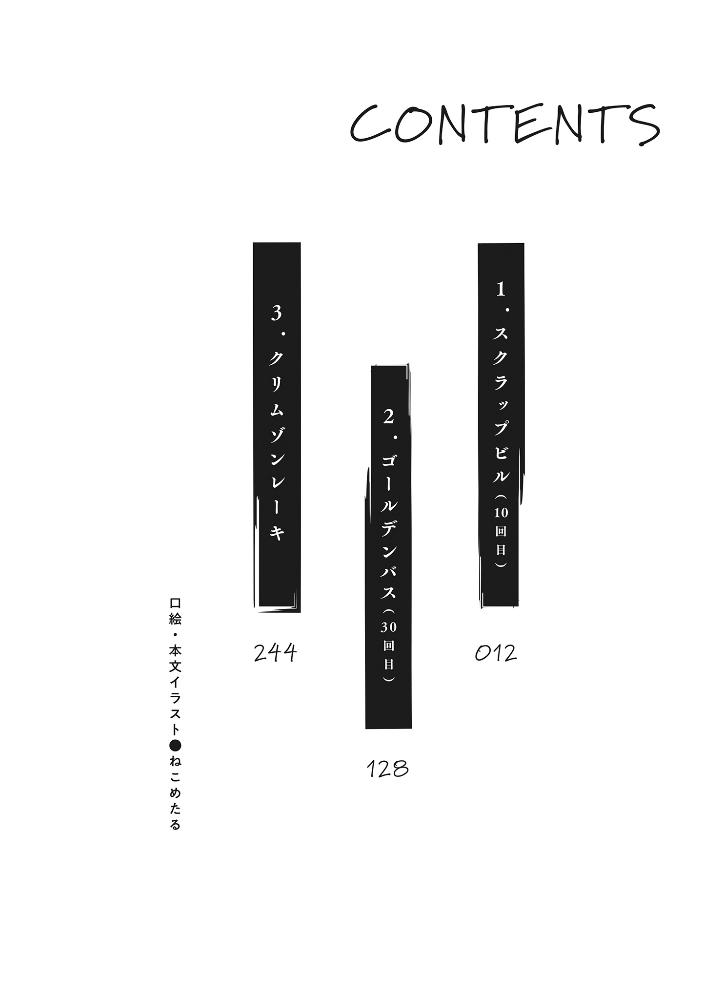

本電子書籍を示すサムネイルなどのイメージ画像は、再ダウンロード時に予告なく変更される場合があります。
本電子書籍は縦書きでレイアウトされています。
また、ご覧になるリーディングシステムにより、表示の差が認められることがあります。

いつ死んでもいいけれど、あいつに負けたままはごめんだ。
（０／30）
冷たいコンクリートの上で
（１／30）
目を覚ましてすぐ、
体を起こした。
白いワンピースを
辺りは薄暗かった。暗い部屋の中だった。照明はついておらず、窓明かりもない。にもかかわらず完全な暗闇ではないのは、部屋の壁に、デジタル数字を表示する液晶が付いていたからだ。〈０５：３２：１２〉の形に赤色光を放っていて、一秒ごとに数字を減らしていた。残り五時間半でゼロになる。五時間後に〈スタート〉なのか、それとも〈ゲームオーバー〉なのか、
ともあれ、薄暗かった。液晶のわずかな光を頼りに見渡すと、中流家庭のリビングほどの広さがあった。コンクリートの床に、ガラス片や
辺りを歩き回ると、
見ると、バックパックが床に転がっていた。元からあったものではなく、このゲームの支給品だろう。
中身は大盤振る舞いだった。
次に目に入ったのは救急用品だった。衛生兵が持ち歩いているようなものではない、登山にでも持っていくようなひどく日常的なもの──具体的には
なにか使えるものはないのかと探してみたところ、各種サバイバル用品、これについてはそれなりに有用そうだった。裁縫セット、照明具等々、救急用品と同じくものは普通だったが、ナイフやロープなど、人間を殺害するに足る性能を有したものも、見受けられた。
そして──最後のひとつ。
「……？」
それをためつすがめつして、
白い紙だった。コピー用紙に比べると丈夫で、かつ、触り心地がいい。表面も裏面も白紙であり、なにに使うものなのか、一見しただけではわからない。──救急用品のひとつだろうか？
折り畳んだり軽く引っ張ってみたり、しばらくその紙をいじって、
部屋の中よりよっぽど廊下は荒れ果てていた。かなり注意して歩かないと、足もろともワンピースがずたずたになってしまいそうだった。照明はなかったが、あちこちの壁についているデジタルタイマーの液晶が、その代わりを果たしていた。
フロアを一周した。劣化し、壁から剥がれ落ちていたフロアの見取り図を見るに、ここは五階らしかった。窓はなく、差し込んでくる明かりがないため、現時刻はわからない。全部で六つの部屋を確認することができた。どの扉から開けてやろうかと、二周目を歩きつつ、
荒廃した内装。照明代わりのデジタルタイマー。
その冷たいコンクリートの上で、すやすや眠っている娘さんが、一人いた。
「……おや」
珍しいな、と
眠っているプレイヤーを発見する。
そのときだった。
その娘が、唐突に寝返りを打った。
素早い寝返りだった。彼女のブロンドが遠心力にしたがってぶわりと広がり、至近距離にいた
爪だ、とすぐにわかった。
その娘の、長く伸ばしている爪だった。
「──誰ですの？」
長いまつげのついた目をひとつ
同時に、首にかかる圧力が強まった。
「……
（２／30）
その後の動きは早かった。お嬢様めいた娘は部屋を順々に周り、各部屋で寝ていた娘さんがたを
「この部屋だけ、誰もいないんですのね」
部屋を見渡しつつ、お嬢様は言った。
「ただ空室なだけなのか、それともまだ潜んでいるプレイヤーがいるのか……。ゲームを進めていけばわかることですけれど」
お嬢様は、自分が集めたプレイヤーたちに視線を移した。
「まずはセオリー通り、自己紹介から始めましょうか」
お嬢様は、
「とはいっても、大半はすでに見知った仲なわけですけど」
「え？」
「あの……もしかしてみなさん、知り合い？」
「ええ。これまでのゲームで、何度かご一緒しました。知らないのはあなただけですわ」
逆に
「それじゃあ、私から」と
「
十回目、と言った途端、お嬢様が眉をひそめたのを
「よろしくお願いします」
「……それだけですの？」との声が、お嬢様から返ってきた。
「それだけ？」
「どんな技能を有しているのか。なにができるのか。そういうところも教えていただけないと、どう扱ったものか判断しかねますわ」
そんなことを言われたのは初めてだった。ゲーム開始時の挨拶は、プレイヤーネームとプレイ回数、あとは適当でよしというのが
お嬢様を見た。「こんなもんでどう」と言った。
「まあ、いいでしょう。だいたいわかりましたわ」
ことばにやや
「
なんとなく察していたが、この縦ロールお嬢様な娘がプレイ回数最多、かつリーダーということらしい。
「どうぞ」と
「ゲームの参加は、五回目です。その……知識面で、みなさんのサポートを務めたいと思っています」
図書委員とかやってそうな娘だな、と思った。
眼鏡、というのがいくぶん特徴的である。眼鏡をかけているプレイヤーの数は──わざわざ言うまでもないことだが──きわめて少ない。このゲームのプレイヤーがあまさず受ける事前処置、〈防腐処理〉によって、視力はある程度の矯正を受けるためだ。運営の医療技術でも解決できない複雑な事情を抱えているのか、それともあの眼鏡は
「思う、では困りますわ」
目を閉じたまま
「いつも言っているでしょう。自信のない表現はやめなさいと。命懸けのゲームでそういう態度はいただけませんわ」
「あ。……う、すいません」
「終わりです」と
「ゲームは、確か四回目かな。役割は……まーなんでしょう、器用貧乏っていうか、なんでもできるけどなーんも突出してない感じですね。よろしくお願いしまーす」
要領のよさそうな娘さんだった。茶色の髪をサイドテールに結んでいる。特定のグループに所属しておらず、それでいてどこのグループにもうまく溶け込める娘というのが、どこの学校のどこのクラスにも一人はいるものであるが、彼女はまさにそれだった。
いかにも世渡り上手そうであり、どうしてこんな娘がゲームに参加しているのかと
「
ことばの切れ目に、その娘は怪しげな笑みを見せた。
「ゲームはこれで六回目。得意なのは──勝つ人間を、いち早く見極めることです。よろしく」
〈勝つ人間を〉のところで、彼女は
ものすごく
いわゆる〈金魚の
これにて五人。全員が自己紹介を終えた。──少なくとも、ここにいる分については。
「六人目もいるのかな」
フロアに並んでいた部屋のうち、ここだけが空室だった。それが示すのは六人目がいるかもしれないという可能性だ。ゲームの舞台とプレイヤー数の折り合いなんていつもうまくいくものではないし、実際、似たようなケースで、単に部屋が余っていただけなんてことも多々あった。しかし、なにしろ、これは殺人ゲームなのである。ほんのわずかな不自然にも、考えを向けないではいられない。
「考えても仕方ありませんわ」
金髪のお嬢様、
「さっきわたくしが言いました通り、ゲームを進めるうち自然とわかることです。今は目の前のことに意識を向けるべきではありませんこと？」
淡白だな、と
「では、その話に移りましょうか。ゲームを進めるにあたってですが──」
「──いつものように。わたくしがリーダーを担う、ということでよろしいですか？」
（３／30）
最初にうなずいたのは、
図書委員の
首をそのままにしていたのは、この場におけるたった一人の新参者、
「わかりました。賛成多数のようですので、今回もわたくしが──」
「異議ってほどじゃないけど」
ここは少し言っておこう。
「理由を聞かせてもらっていいかな。一応、プレイ回数の最多は私だけど。自分がリーダーにふさわしいと考える理由は？」
「役職への適性と信用からですわ」
「プレイ回数の多寡は問題ではありません。単に自分が生き残るのと他人を統率するのでは、使う頭が違いますもの。それに、この場の誰もあなたのことを知りませんわ。総合的に見て、みなさんにとって慣れ親しんだわたくしがリーダーを務めるほうが安心。そうではありませんこと？」
それはまあ、その通りだった。
「それに──少々、あなたのことを疑っておりますの」
くすくす、と笑いながら
いい笑顔だった。
「わたくしの観察する限り、とても十回のプレイヤーには見えませんわ。所作のひとつひとつが
「ふいてるって言いたいのか？」
「いいえ？ ただ、もう少し、つじつまが合うように発言したほうがよろしいかと」
それは
一応、
が、このゲームではその瞬間の能力がすべてだ。そんな言い訳は見苦しい。「わかったよ」と
「
「それでは全会一致ということで。ゲームを始めましょうか」
代わりに目を向けたのは、部屋の壁についている、赤いデジタル数字。〈０５：１１：１３〉と表示されていた。
「あのタイマーを見るに、どうやら脱出型のようですわね。素直に階段を降りていくことにいたしましょう」
脱出型とは、ゲームの分類のひとつである。その名の通り、特定空間からの脱出を目指すゲームだ。たいていの場合、会場には人を死に至らしめるトラップが満載であり、プレイヤーはそれを避けながら進まないといけない。ゲームバランスの設計がしやすいのだろう、全種類中最も出くわす機会の多いゲームである。
「みなさんのバックパックにも入っていましたか？」
今度は、
「前を見通すのには、ひとつで十分ですわ。電池がどのぐらいもつのかわかりませんし、節約しながら進むのが賢明でしょう」
五人は廊下に出た。暗い中、縦に並んで歩いた。懐中電灯で照らしつつ先頭を行く勇者を、
闇の深さの分だけ、神経を
廊下を踏破し、階段を降りる。
踊り場にさしかかったところで、「……おっと」と、
「なんですの？」
そこには、穴が空いていた。
人間一人を飲み込むことなど、造作もない大きさのものだった。
「ああ……。なるほど」合点がいったというふうに
「いえ、それだけではなく……」
「？」
穴の底には死体があった。
（４／30）
うつ伏せの体勢だった。顔は見えなかったものの、
頭を地面に強打したようであり、ぶつけたところから〈中身〉がこぼれていた。それは血の赤色ではなく、体液の透明でもなく、白だった。このゲームのプレイヤーが事前に受ける肉体改造──〈防腐処理〉によって、流出した体組織は、ぬいぐるみの綿のような白いもこもこになるのだった。これにより人が死んでも画面がえぐくなることはないという、このゲームをショービジネスたらしめている運営の工夫のひとつなのだが、どうなのだろう、本物の死体というのを
「六人目、ですわね」
「一足先に目覚めて、ふらふら歩いていたら落っこちた、というところでしょうか」
フロアにひとつあった空室。その謎は、これにて解明されたわけだ。
また、
「おろかですわね。こんな
「いや……あの」
そこで声をあげたのは、図書委員のような娘さん、
「なんですか、
「あの、あれ……」
「〈あれ〉ではわかりませんわ」
その指の先には、懐中電灯があった。
物言わぬ六人目の遺体の、左手のそばに落ちていた。彼女に支給されたものだろう。
それを見て、「ああ」と
「〈落とし穴〉なんだな、これ」
それが言いたかったんだ、というふうに、
ライトがそばに落ちている。つまり六人目──あるいは一人目というべきかもしれないが──の彼女は、道を照らしながら進んでいたということだ。
にもかかわらず彼女は穴に落ちた。
なぜなのか。答えはひとつしかない。この穴は、彼女がここを踏んだ瞬間に開いた──すなわち〈落とし穴〉だったということだ。
前方を照らしながら進めばセーフなんて、そんな甘いゲームではない。
床のやわいところを踏んだなら真っ逆さま。
これは、地雷ゲームなのだ。
（５／30）
一行は四階に降りた。踊り場から四階に至るまで、〈地雷〉はなかった。ダメージを受けたプレイヤーはいなかった。ただ、その距離分彼女たちが神経をすり減らし、階段を降りる時間分、懐中電灯の電池が消費されたというだけだ。
普通、ビルの階段というのは一階まで直通しているものだが、このゲームがそんな優しい設計であるはずもなかった。一階分を降りた時点で階段は途切れ、その先にあったのは、あてのない四階の暗闇だけだった。随所で時を刻んでいるデジタルタイマー以外に、明かりはない。フロアのどこかに三階への階段はあるのだろうが、手がかりはなにもなかったので、しらみつぶしに歩くという以外の作戦を一行は持ちえなかった。
一行はまず、例の遺体を調べに行った。間近で観察し、わかったことはふたつ。ひとつは、この娘が間違いなく死んでいるということ。ふたつは──こっちのほうが重大だったのだが──彼女の懐中電灯が、すでに電池切れになっているということだった。彼女が死んだあとも、電灯が
追加の電池を手に入れることはできなかったものの、それでも、彼女のバックパックから使えそうなものを物色し、一行は遺体を後にした。
フロアの攻略に繰り出した。踏んだら真っ逆さまの〈地雷〉が仕掛けられているという事実を受けて、隊列は少し変更された。先頭を
支給品のロープである。
それが、四人の手と、
「なんか、犬にするみたいで嫌な感じだな……」
前方を歩く
ロープでつないでいる目的は言うまでもない。彼女が〈地雷〉を踏んだとき、床に激突しないよう引き上げるためだ。人間一人の体重を支えるためのものなのだから、手に握らせておくとか、腕に巻いておくとかでは不十分である。胴体にしっかり巻かないといけない。
しかし、これでは、犬の散歩のような、あるいは連行される奴隷のような構図である。
「仕方ありませんわ。ビジュアルの
それに、なにもこの処遇が永遠に続くわけではない。同じプレイヤーがずっと先頭を歩くというのでは、そのプレイヤーの負担が大きすぎる。ワンフロアごとに交代する
「──待った、
そして振り返った。「なんです？」
「その先、ちょっと怪しい」
「
「……理由を聞いても、よろしいですこと？」
「監視カメラがついてる。かなりわかりやすい位置に」
そこには、確かにカメラがあった。巧妙に隠してあるわけでもなければ小型のものでもない、監視そのものよりも企て事の防止を目的に設置されるような、〈見せ〉のカメラである。
「よくわかりましたね、あんなの」
「しかし、カメラがあるからなんですの？ そんなもの、ここにはいくらでもあるでしょう」
「あからさまに見せてきてることが問題なんだ。ああもでっかいカメラがあったら、なにかあるって思わない？」
「わざわざトラップの位置を知らせているということですの？ どうして？」
「番組を面白くするためさ。ドッキリカメラが、ばれるかばれないかのぎりぎりにまで、あえて踏み込んでみせるのと同じだよ」
その説明が
「引き返しましょう、みなさん」
こうして一行は、しらみつぶしの探索に初めて変化をつけた。来た道を戻り、
が、一分もないうちに
「こっちも怪しい。引き返そう」
「……今度はなんですの？」
「カメラはないようですけれど。なにをもってそう判断したんですの？」
「……勘かな。女の勘」古臭い表現を
ごまかしているのではない。本当に勘としか言いようがなかった。なんの変哲もなさすぎて逆に怪しい道の様子、一帯にただようゆるりとした気配、やや
「うまく説明できないけど、たぶん、やめといたほうがいい」
「
「わたくし、今ならまだ、あなたのことを受け入れる心の用意がありますわ」
「なんの話？」
「あなたの気持ちはお察しいたしますが、しかし、ここは、勇気ある選択をお願いしたいですわね。さすればわたくしたちも、同じだけの歩み寄りをいたしますわ」
「言いたいことがあるならはっきり言ったら」
「よろしいのですか？ では、遠慮なく。──変に意地を張るのはおやめなさい」
そのとき、辺りが暗闇に包まれた。
「引っ込みがつかなくなったのでしょう？ 我十回目なりと偽ってしまったものですから。あなたは少しでもいいから、十回目らしい演技をしなければならなかった。危険を察知するとはじつにうまい手ですわね。道を引き返している限り、
頭の中で勝手にシナリオ組むな、と思った。
「勝手にシナリオ組むな」そのままを言った。
「妄想たくましいね。このゲームに向いてるよ、
「
「ええ。彼女の言うことは、お耳に入れなくてもよろしいですわ」
まじかよ。
その足が前に出るのが、
一歩進んだ。
二歩進んだ。
三歩進んでも、そのあとも、足元が崩れることはなかった。
「…………」
「
「いつでも構いません。一言謝罪があれば、水に流しますわ」
心臓に血が
（６／30）
それが理屈だ。
だが、その場の雰囲気というのはある。
そのような論理展開をしたとて、風向きがよくなるとは思えない。道は崩れなかった。
〈地雷〉が
一行は無事、四階を踏破した。階段を見つけ、三階に。例によって一階分しか階段は続いておらず、四階と同じ暗闇が待ち受けていた。プレイヤーたちは運命のじゃんけんを行い、選ばれたのは眼鏡の娘さん、
これにて、ふたつめだった。五階から四階にかけては
つまり、四階ワンフロアを探索するのに、二人分の電池が必要だったということである。残るフロアは三階分。それに対し残る電池は三人分しかないのだから、このままの調子でいけば、脱出のはるか前に、プレイヤーたちは光源を失うという計算になる。
この事実を前にして、
──〈これからはもう少し巻きで進めましょう〉。
「なあ、このままじゃまずいって」
「急ぎで行けば間に合うとか、そんな話なわけないって。そもそも電池が足りない設定なんだよ、このゲームは」
「電池が五人分で、フロアが五つ。四階ワンフロアでだいたい二人分の電池を消費したってことは、このままのペースでいけば、二階の半ばで全員分が尽きる計算になる。残り一フロア半。それだけの距離を急ぎで踏破するなんて
三階に降りてすぐ──
しかし、彼女の〈格付け〉はすでに済んでしまっている。話を聞いてもらえるわけがないのは必定だった。
「どっかで我慢しなきゃいけないんだよ、これ。四、三、二、一階のどっかで、電池を使うのを我慢しないといけない。ってことは……ってことはだよ。下の階に行けば行くほど、トラップも過激なものになっていると考えられる。だってそのほうが〈早く我慢する〉のにメリットがあって、ゲーム的に面白いもの」
話の構成がやや乱れている。そう思いながらも
「今ならまだ間に合う。四階でそのことに気付いて、三階で実行するっていう、それが運営の想定してる攻略ルートのはずなんだよ。だからここ──三階にあるのはまだ、絶対に死ぬってレベルの
自分で言うのもなんだが、うまく説明できていると思う。
論理に破綻はない。わかりやすく話せているとも思う。しかし、であるにもかかわらず、
きっかけは先頭。
「……？ どうしたんですの、
そんな体勢のまま、首から上だけを動かして、
「なんですの？ 早く言いなさい、電池がもったいないですわ」
「〈地雷〉が、ここにあります」
「その先に落とし穴があると？ どうしてわかったんですの？」
「いや……違います、そうじゃなくて！」
「踏んだ感じが変なんです！ こっ、ここに……埋まってます！ 本物の〈地雷〉が！」
（７／30）
映画なんかでよくあるやつだ。
ジャングルを進む一行。うち一人が、足元に妙な感触を覚える。足元を見ればそこには、おぞましき鉄の円盤。地雷を踏んじまったのだ。行軍はひととき中止せざるをえず、近くから石かなにかを持ってきて〈重し〉とし、それをおとなしいままにさせておかないといけない。
ああいうシーンを見るたび、
しかし、そのフィクションの産物が、今、
「あの、あのあのあのこれ」
「現状維持ですわ。そのままの姿勢をキープなさい」
「はい……」
いい機会だ、と
〈どうだ〉という顔をしてやった。
「……ふん」
と言って、
もちろん、このことからわかるのは、三階の
「とにかく……映画の
「決まってるでしょう。
──なんだ、ちゃんとわかってんだな。
そう
ここは廃ビルである。
「お願いしますわ」と言って、
「相当に当たりどころが悪くない限り、命までは取られないものと思いますが……それでも慎重になさい」
「……わかりました」
一行は地雷──すなわち
「よろしいですわ」と
一行は息を潜めた。
十秒
二十秒経った。
三十秒経っても、そのあとも、なにも起こらなかった。
「……お、終わりました……けど」
やがて、か細さの極みのような声が聞こえてきた。
それをもって、一同の間に、
「一件落着ですわね……」
「お疲れ様ですわ、
「は、はいっ」
その最中、なにかを引きずるような音がした。
その正体に、
「あ。
慎重にゆっくり戻って来い。
──とまで、言い切ることはできなかった。その前にごとん、と、地獄の釜の蓋が開くような、重く低い音が聞こえてきたからだ。
「あ──あのばか！」
（８／30）
音は、ぼん、で間違いなかった。
予想より大きくもない、小さくもない、そこそこの爆発音だった。爆熱で温められ、爆風に運ばれた廃材たちが、道の端から先を競うように飛び出してきた。壁に反射したそれらが
しかし。
しかし、あとのもう一人は。
「
そう叫んだのは
まず、道の先がなかった。
地雷の
そして、こちら側に
また、彼女を不幸に追いやった犯人、それを発見することもできた。
あのごとんという音。おそらく、バックパックが倒れた音だ。どこにどうロープを引っ掛けた結果、バックパックが倒れるに至ったのか、それはわからない。わかるのはふたつ。ひとつはここが、引っ掛けるものがいくらでもある廃材だらけの廊下だということ。ふたつには、そんな場所であわただしく駆け出してしまったら、どんな力がロープからバックパックにかかりうるか、まったく予想がつかないということだった。
そのうちに煙も晴れてきたので、
「──っ」
誰かが息を
が、
「
「……あれはもう、だめですわね」と、お嬢様は息を吐いた。
「
「え……」
「見捨てるの？ まさか」
「見捨てるもなにも。あれが生きているように見えますか？」
「いや、生きてるって。〈防腐処理〉があるんだから、あれぐらいどうってことないよ」
このゲームのプレイヤーは、ただの一名の例外もなく、〈防腐処理〉と呼ばれる人体改造を受けている。その効果により彼女たちは体臭を持たず、体の半分が吹っ飛んでも失血死することはなく、
「首の骨折ってるとか、頭の打ちどころが悪かったとかだったら知らないけど。外見的には命に別状ないはずだよ」
「生命的な意味ではありません。プレイヤーとして死んだ、という意味ですわ」
「あ？」
「両脚が丸ごと
生命を軽視していることきわまりないこのゲームだが、意外にもゲームの〈外〉においては、プレイヤーは手厚く保護されている。ゲーム終了後には、運営による医療的サポートを無料で受けることができるのだ。〈防腐処理〉の存在のため、治療可能な怪我の範囲は通常よりかなり広い。腕が飛んでも足が飛んでも、ぬいぐるみを
「彼女がプレイヤーとして復帰できる可能性は、ゼロですわ」
「そうかもしれないけどさ」
「それに、助けに行くのもただではありませんわ。向こう側に通じる経路を探すのに、余計に電池を使わないといけない。本来なら踏まなくてもいい地雷を踏むリスクも背負わないといけない。そのコストに見合った価値が果たして彼女にありますか？」
「──コスパが悪い。そう言いたいのか？」
「表現を選ばずに言えば、そうなりますわね」
「……いやー、しょうがないんじゃないですかね、これは」と
「私たち一応、お互いに生き残るため組んでるわけですし。仲間意識はありますけど、なにがなんでも助けに行く、みたいなのとは違いますよね。それに今回の件って、
「右に同じ」
「余計に電池を使って、共倒れになったら最悪です。電池を節約すべき、と言ったのは
薄情だな、とは思わなかった。
他人より自分。利他よりも利己。なんだかんだ言って、それがこのゲームの常だからだ。
しかし、残念だ。そう
「じゃあ私が一人で行くよ」
「それなら、私の勝手でしょう？」
「いいえ。勝手ではありませんわ」
「あなたのライトを、わたくしたちに渡してからにしてくださいまし」
懐中電灯。このゲームにおける生命線であり、
が、「わかったよ」と
「これで文句ないな」
「……確かに」と
「少し、あなたへの評価を改めようと思っていたところですのに」
「こっちこそ残念だよ」
去り際に
「みんな、このゲームをまったく理解していない」
（９／30）
すると、
「あ。……
意識があるのだ。しかも発声すらできていた。「ここがどこか、わかる？」と
「ゲームの舞台で、廃ビル……」
「自分の名前は？」
「
「プレイヤーネームのほうで頼むよ」
「……
「記憶はある？ 自分がどうなって、今こんなことになってるのか」
「地雷、を踏んで……ロープを引っ掛けて……」
問題なさそうだった。両脚がなくなっているのはもちろん大問題だが、その生命、脳機能までは損なわれていないようだった。
「なんで、来たんですか……？」と、その最中、
「点数稼ぎさ」
それは、用途不明の白い紙だった。
「好感度は大事だからね、このゲームでは」
「……そういうこと……ですか」
「体重何キロなの？」
「この前量ったときは、四十五でした……」
「じゃあ、今は三十キロぐらいかな」
「……笑えないです」
（10／30）
引き続き暗闇の中を
角を折れて、
ぱっ、と一瞬だけ照らした。
「……すごいですね、
「え？」
「そんな一瞬で、罠がないってわかるものなんですか……？」
「うん。まあね」と
「トラップを見抜くのは、なんといっても直感だからさ。一瞬だけ見えれば十分なんだよ。もちろん、ずっと点けていたほうが十全ではあるけど」
さらにいえば、
「本当に十回目だったんですね、
「信じてなかったんだな」
「すいません。正直……」
「……まあ、かなり久しぶりのゲームだし、そう見えなくても無理ないよ」
「どうしてゲームに復帰なさったんですか？」
「いや、別に、一度引退したってことではなくてさ。前回のゲームでちょっと宗旨替えをして、自分の生き方というかなんというか、いろいろ見直してたんだよ。それで間が空いたってだけのことで」
「前回のゲーム……それって、いつのことですか？」
けっこうぐいぐい踏み込んでくるな、と
「そうだな、確か三ヶ月前ぐらいかな……」
「あ……ということは、〈キャンドルウッズ〉よりも前の人なんですね」
「エージェントの人から聞きました。プレイヤー数が激減してしまったとか……。だから早く補充したい、ということで、私はスカウトされたんですけど」
「はい。全員、少し前のゲームで知り合いました。プレイヤー数三十人ぐらいで、全員一回目だったんですけど……そのときに、グループを組んだんです」
「はい」
「
このゲームがプレイヤーに与える最もわかりやすい報酬。それは金だ。一回のゲームにつき、個人差はあれど、数百万のマネーが転がり込んでくる。資格も経歴も国籍も問わず、せいぜい数日の稼働で得られる金額としては、じつに破格だ。とはいえ、プレイヤーがこのゲームに求めるものはそれだけではないと、
「答えにくいことなら、別にいいよ」
「あ、いえ……そうじゃないんですけど……」
「……アーリーリタイアしたくて……」
「…………」
……うーん、現実的だ。
「世捨て人になりたいんです。だって、なんだか最近、みんな頭が変になってるじゃないですか。冷笑主義。マキャベリズム。公正世界仮説。まるで集団ヒステリーですよ。ああいう人たちの中で生きていたくはありません。だからさっさとお金を
半分になってしまった
「つつましく暮らすか、別の方法を考えないといけないかもしれません……」
苦笑いをしていいものかどうか、判断がつかなかった。
「
「私はね、連勝記録のため」
「このゲームに九十九連勝する。それを目標にやってる」
「九十九……ですか？ 百じゃなくて、九十九？」
「どうも、今までの最高記録が九十八連勝らしくてね。だからとりあえずは九十九連勝。きりがいいから百連勝もしてみたいけれど、でもまあ、命懸けだしね。出るかどうかは検討中」
「……すごい目標ですね」
「いいや、なにも。ただ新記録というだけ。トロフィーとかもらえるのかもしれないけど、少なくとも私は知らないな。そもそも九十八連勝が最大っていう情報も怪しいしね。私が直接会ったプレイヤーだと、九十五連勝が最大だったよ」
──なにが楽しくてそんな記録を目指してるんです？
その質問に対する確かな答えを
「なんだろうな……まあ」
悩んだ末、結局、
「目標が欲しかったんだよ。なんでもいいから」
「はあ……」
師匠はこんな気持ちだったんだなあ、と、しみじみ思う。
雑談しているうちに二階への階段を見つけた。
「えっ……？」
「なんだこりゃ」
階段は、そこで途切れていた。
（11／30）
階段が終わったのではない。途切れていた。三階から二階へ至る階段、踊り場の先に存在しているはずの階段の後ろ半分が、すっぽりと抜け落ちていた。二階の床が、飛び降りるのにやや
「……なんだこりゃ」
下を眺めて、
「落とし穴……なのかな。変則的な」
「〈一方通行〉ということかもしれません」
「きな臭くなってきたな……」
「降りるしかないか。ちょっと揺れるけど、勘弁してね」
「はい」
とはいっても、やることは今まで通りだった。一瞬だけ道を照らして、安全確認。
「足音がしないな」歩きながら
「私たち以外の足音がない。決まりきった言い方だけど、不気味なぐらい静かだ」
「ずっと真っ暗なままなのも気になりますね」
「すでに一階に降りたか、あるいは、電池切れになって立ち往生しているか、だな」
「あの……
「うん」
「
「降りるよ」即答だった。「だって後者かどうかなんてわかんないし。もう一階に降りてるのかもしれないのに、わざわざ探しには行かないな」
「そのまま、合流することなく、出口にたどり着いたとしたら？」
「……どうしようかな？ その場合。出口付近がどうなってるかまだわかんないしな……今のところはなんともいえないね」
「そうですか……」
それを最後に、
できることなら、
「まあ、助けられるタイミングが来たら、助けるよ」
耳触りのいいことを
曲がり角を折れた。
それにしても、全然
今のところ、選んだ道はすべて安全だった。二階に降りたときの緊張感が
背中に、寒気を覚えた。
（12／30）
一瞬が過ぎて、また歩き出した。ほんの一瞬のことだった。普通に歩いていただけのように
しかし、
止めさせられたのだ。
背中に浴びせられた、稲妻のような〈殺気〉に。
声を殺しつつ、
「後ろに誰かいる」
「え、……」
とまどう
「なんていうか、〈殺気〉がした。誰か、私たちを狙ってる」
表面上は、今までと同じように歩みを進めつつ、
「殺気って……そんなの本当にあるんですか」
「さあ。でも、感じたものは感じたんだ。〈気配〉と置き換えてもらってもかまわないけど」
口ではそう言ったものの、
「足音は聞こえませんけど……」
「聞こえない距離をキープしてるんだろうね。だから、今、すぐに後ろを照らしても、たぶん姿は見えない」
「誰、なんですか」
「それが問題だ。
「いや……いないと思います」
「じゃあそれ以外だな」
まず思いつくのは、例の〈六人目〉である。
となると可能性はひとつ。
「この二階に潜んでいる──致命傷に至る
「……〈生物〉……ということですか」
人の力ではとても太刀打ちできない化け物。そいつに見つかったら、なにをやっても助からない。そうした〈超存在〉を題材に選んだホラーは数多い。そういうものがこのゲームに現れるのはなんら不思議なことではないが、しかし、十回目の
階段が途切れていたのはそれでか、と
「ど……どうするんですか？ そんなのに狙われてるってことは、私たち……」
「落ち着いて。とりあえず……距離を取ってくれてるわけだし、今のところは安全さ。襲いかかるタイミングを計ってんだろうね」
それとも──。
「
必要なのは、長い廊下だ。〈そいつ〉の空けている距離よりも長い廊下、ただひとつ。
そして、〈それ〉にライトを照射した。
けだものがいた。
（13／30）
四足歩行だった。
イヌ科に見えた。
全身のフォルムからすると、イヌというよりオオカミに見えた。が、
その歯はすでに、獲物をとらえていた。幾度となくかじられたのだろう、破損が大きく、表面のほとんどが白いもこもこに覆われていたが、しかしそれに覆われているがゆえ、正体を理解することは
人間の腕だった。
誰のだ、と思ったのと同時、〈それ〉は動き出した。
じり、と
じりじりと後退させられながら、「なんだよあれ」と
「……けだもの、に見えますね」
「いや……あんなに損壊していては、なんとも」
「まさかゲーム前に与えられたおやつじゃないよな。……誰かやられたんだ」
「腕一本で済んでいればいいですけど……」
オオカミが上がってくる。
「
「運営が特別に調教したんじゃないでしょうか。〈ジェヴォーダンの獣〉を連想します」
「なにそれ」
「人喰いオオカミの伝説です。体が黒くて大きくて、百人以上の人間を食べたそうです。たぶん、それに似せて、普通のオオカミを調教したのではないかと」
「冗談じゃないな……」
下がりに下がって、
結果として、
「〈ジェヴォーダンの獣〉っていうのは、一匹しかいないの？」
「一匹とされることが多いですけど、でも、断定するのは危険かと……」
「光に弱いなんていう性質もあったりする？」
「いいえ、そんな話は聞きませんが……でも、このゲームの性質からして、たぶん……」
ぴたり、と獣が前進を止めた。あたかもそこに見えない壁があるかのように、左に、右に、とうろうろし始めた。
やはりか、と
この獣は、光に弱いのだ。ゲームの性質を考えれば、それが自然である。常にフロアを照らしつつ進んでいれば襲われることはない。しかし、──
「……まずいよな、そろそろ」
その光は、最初のころよりだいぶ
しかし、なんにせよ、切れるものは切れるのだ。
その事実をおそらく、目の前の獣は理解しているのだろう。だから逃げないのだ。光がなくなったとき、やつがどういう行動に出るか。考えるまでもないことだった。
「戦うんですか」
「やむをえない」
「この状態で、ですか」
「降ろそうか？」
「勘弁してください……」
この際バックパックも持ったままやるか、と
それと同時、だった。
ライトは完全に沈黙した。
辺りが暗闇で満ちた。
が、廊下の景色は、床の染みひとつの位置に至るまで
その超感覚の網に、獣がかかることは、なかった。
（14／30）
気配が
殺気も消えた。
だからといって、やつがいなくなったのだと考えられるほどに、
「行ったか」
「行ったな」
「行きましたか」
「真正面から構えられて、武器もあるからね。条件がよくないと思ったんだろう」
足音を
「私たちも行こう」
「大丈夫ですか、暗いままで」
「大丈夫じゃないけど、ないものはしょうがないよ」
二階の
が、そんなことを言ってもないものねだりだ。せめて足元に注意を払いながら、「生きてるかな、みんな」と
「生きててほしい、ですけど……」
獣の口にくわえられていた腕が、
「相手がオオカミってことは、こうしてしゃべってるだけでも位置は筒抜けか。足音だけでも……いや、静かにしてても匂いで特定されるな」
「明かりがあれば襲われないみたいですけど、でも、真っ暗ですし……」
これだけ暗い空間なのだから、明かりを
以上のことから考える、彼女らの生存率は──。
「──まあ、まだわかんないね」
「実際に証拠を見てから、悲しむなりなんなりすればいいさ。気楽に行こう」
「そう……です、よね」
耳心地のいいことばだった。
それに、実際、その悲観的予想は外れたのだ。
行動を再開して、しばらく。
廃材の山を横切ったそのとき、なにかが
「……!!」
山を蹴っ飛ばす格好になった。どんがらがらと音がして、崩れた。暗闇ゆえなにがどうなったのかは見えなかったが、手ごたえがあった。
「な……なんですか？」
「たぶん、生物だ」
膝のあたりを触られた。皮膚の感触と、体温とを感じた。何者かが廃材の山に隠れていたのだ。〈ジェヴォーダンの獣〉が隠れられるサイズではなかったはずだが、まさか子供か。それともまた別の獣がこのフロアにはいるのか。
「待った待った！
そこでまたしても、
今度は事前に声があったので、足が出ることはなかった。足元に顔を向けた。そこにあったものは──。
「……
ひょろりとした体つきの娘さん、
「……ひどいですよー、
廃材の中から、
（15／30）
「そっちこそ、
ということは、獣のくわえていたあの腕は──。
「
いちばん気になることを
「やみくもに逃げてるうちに……。消息不明です」
「すると、あれは
彼女の話に欠落があることがその反応からわかった。〈腕ってなんのことですか？〉〈腕が落ちてたんですか？〉ではなく、〈そうだと思います〉。
見捨てた、ということである。
「廃材の中にいたのは、あれか。例のけだものから隠れてたのかな」
「ええ。あんなやつ相手に、勝ち目はありませんからね」
「隠れてるだけ……で、大丈夫だったの？」
「私たちも最初はそう思ってたんですけどねー。セーフみたいです、どうも」
「ああ……」
そういえばそんなのもあった。〈防腐処理〉。その効果により、
「とはいえ、音を立てたら見つかってしまいますからね。やみくもに逃げたもんで道もわからず、身動き取れずでして。助かりましたよ、
「よろしければ、このまま同伴させていただきたいんですが、大丈夫でしょうか」
「私と一緒にいても、あの獣は襲ってくると思うけれど」
「真正面から撃退したんでしょう？ でしたら、もう襲っては来ませんよ。どちらが格上なのか、犬畜生にも理解できたことでしょうから」
そんなはずはない、と
「まあ、いいけど……」
「どうせ、あとちょっとのことだし」
「え？」
やっぱり気づいてないのか、と思いながら、
「……なんでわかるんですか？」
「空気の流れ方が違う。たぶん、一階には窓があるんだろうね。外の空気が、ほんのわずかにここまで届いてきてる」
「わかる……？ そんなの」
果たして──いつかのときとは違い、
「……すごい」
「さすがです」
「いや……このぐらい気づかないとまずいよ」
階段に近づいたところ、奥からかすかに光が漏れているのが見えた。一階には電気も
が、
足音がふたつしかないことに気づいたのだろう、
「まさか、この階段になにか
「ん？ いや、そういうんじゃないけど」
「……うん。行ったほうがいいだろうね」
「え、まさか。……
そう言ったのは
「そのまさかだよ」と
「生きてるかもしれないからね、まだ」
たった一人取り残されたプレイヤーを助けに行く。
しかし
「背負ってってもらえるかな。さすがに連れては行けないから」
「構いません、けど……」
「……なぜですか？ その……
またしてもひどい発言だった。
「点数稼ぎさ」
（16／30）
どうしてこうなった。
（17／30）
暗闇だった。
小部屋の中だった。
しかし、いつまでもこのままではいられない。
破滅は今も、着実に迫っている。
「……ちくしょう」
このゲームには〈制限時間〉がある。ビルのあちこちに置かれているタイマー、あれがゼロになったらおそらくゲームオーバーだ。一階に取り付けてある巨大爆弾でビルごと吹っ飛ばされるのか、それとも
今すぐにでもここを離れたいのはやまやまだった。だが、勝算がなかった。ここに逃げ隠れるまで遮二無二走ってきたので、道のりをまったく覚えていないのだ。どっちの方角からこのフロアに降りてきて、どちらの方角に階段があると思われるのか、全然わからない。適当に走って階段にたどり着こうなんてのは考えが甘い。こうして隠れてても状況がよくなるとは思えないし、体力と気力が残っているうちにいちかばちかトライすべきなのかもしれないが、その勇気が
さらにいえば、それすらも、満足にできているとはいえない。
なぜなら彼女には、抱える腕が一本しかないからだった。彼女の右腕、その肘から先は、白いもこもこに覆われていた。この先に本来くっついているべきものは、今ごろは獣の腹の中に消えていることだろう。
「ちくしょう」と、
普段の優雅な態度は見る影もなかった。そんなもの、二階に降りてすぐに吹っ飛んだ。全員の電池がなくなり、あの獣が姿を現して、
そして、暗闇に。
「……ちくしょう」
もうどのぐらい、こうしているのかわからなかった。実時間としては大したものではないのだろう。せいぜい十分か、二十分か。しかし
なぜだ。
なにがいけなかった。私はどこで間違えた？
まず思い浮かんだのは、あの憎たらしい女の顔だった。
あいつが、十回目なんてこと言い出さなければ。
次に思い浮かんだのは、
だのに、あんなやつがいるなんてエージェントからは聞いてなかった。これでは詐欺だ。やつの甘言に乗らなければ、こんなことには。
次に思い出したのは、自分の部屋を隅から隅まで破壊した夜のことだった。壊したのは、人生に壁を感じたからだった。壁を壊せないから自分の部屋を破壊したのだ。こんな時代に生まれ落ちてしまったことが人生最大の不幸だと
最後に行き着いたのは、母親の顔だった。自分の身長の倍以上の高さにあったそれを見上げて、
死ぬのはお前だよ。
「…………」
そのまま、意識も沈むままに任せた。眠っちまってもいいや、と思った。もう疲れた。もうどうでもいい。右腕がなくなった時点で、自尊心というのだろうか、なにがなんでも生き残らねばならないという信念を、
足音がした。
幻聴ではなかった。繰り返し聞こえた。こちらに近づいてきていた。
だから、足音の主が部屋に入ってきても、
獣の襲撃を二回
隠れ家を吹き飛ばされたとき、
いや。確かに一瞬止まった。時間の断裂する感覚が
くだんの幽霊女、
（18／30）
案の定、廃材をめくったところに
「元気そうだね」
暗所で見ても明らかなぐらい、
「わかったんですの、ここが」
「女の勘だ」
いつかと同じことを
「いくらブランクが長いっつっても、犬畜生に負けるほど衰えたつもりはないよ」
「なんの用、ですの」
「用があるのはむしろそっちのほうじゃないの」
「今ごろきっと、例の獣は一目散ここに向かってきてるんだろうね。今度は右腕だけじゃない、
「……あなたも……でしょう」
「いいや。私はセーフティだよ。だってもう、階段を見つけたからね。いつでも逃げられる」
「もちろん道順も覚えてる。すでにもう、ほかの三人は一階に降りたよ。あとは
「……階段を見つけたのに、引き返してきたんですの？」
「そういうことになる」
「わたくしを探しに……助けに来た、とでもいうんですの？」
「まさか」
そう言った。
「わからせに来たのさ。このまま死なれたんじゃ、消化不良だからね。今のうちに認めてもらっとかないといけない。どちらが上でどちらが下なのか」
「は……？」
「ずいぶんいろいろ突っかかってくれたよね、
「生意気な態度とってごめんなさいって謝れたら、階段まで案内してあげる」
（19／30）
「ん、どうしたの？ 自明なことを認めるだけだよ。状況からして、どっちの能力が上かなんてことは一目瞭然だよね。
だが、ふるえるばかりで、意味のある行動には結びつかない。
「それとも、まだ格の違いがわからないとでもいうのかな。やだねえ。無能ってのは変に自信満々だから困るんだよな。自分に力がないってことに気づけないから、同じ失敗を死ぬまで繰り返す。遠巻きに見てる分には愉快だけど、隣人には持ちたくないね」
だが、心の中では、ひとつの単語を繰り返していた。
こいつ、こいつ、こいつ、こいつ──こいつ！
「なに黙ってんだよ。まさか獣がやってくるまで時間稼ぎする気か？ そうはいかないよ。あと十秒。それまでに言えなかったら、心苦しいが見限らせていただきますよ、おじょうさま」
そう言って
右手の親指を
右手の人差し指を
七、六、五と、指の数が減っていく。そのさまを
──言ってしまえ、という声が頭の中でした。
そうだ。認めるしかあるまい。客観的に見て、
謝りさえすれば、
だが、
なに止まってんだ、と思う。なに考えてるんだ。小学生の
──悔しい。
そのことばをひらめいた途端、
そうだ。私は、悔しいのだ。負けを認めるのが悔しいのだ。こいつに降参して、命を永らえるのが許せないほど悔しいのだ。
「ふざけるな」
指が残り一本になったところで、
「ん。なに？」
「ふざけないでくださいまし!!」
（20／30）
反応できなかった。
〈キャンドルウッズ〉の生き残りでさえも、反応できなかった。
気づいたときには、
「…………？」
どきどきしていた。頭のほうも、同様の状態だった。
うまく回らない頭で
それで、なぜかどきどきしている。
野太い足音が、遠くから聞こえてきた。
「……そうだ、行かなきゃ」
走りながら、もう一度、胸に手を当てた。
どきどきしていた。
走っているからではなかった。予定外の出来事に
かわいいな、と思った。
死んでほしくないな。そうも思った。
横道に、黒い影が見えた。
（21／30）
「……がっ!?」
体勢を崩し、食らった勢いのままに廊下を転がった。暗闇の中で転がるということが、こうも人間の平衡感覚を狂わせるものなのかと新しい学びを得ながら、
「気に入った！」
声がした。
「特別に助けてあげよう！ 次の角を左に行って三つ目の角で右だ！ 私が引きつけてるうちにとっとと──」
ことばが
なにかの暴れる音がした。
二階の
数秒前まで、
なぜだ、と思った。
罠なのか？
考えられないことではなかった。しかし
（22／30）
足音が遠のくのが聞こえた。行ったか、と
〈ジェヴォーダンの獣〉の牙が
すこぶる調子がよかったので、獣をしりぞけるためにナイフを後ろ手に構え、暗闇の中で正確に目玉を攻撃するその動きによどみはなかった。あんまり残虐な殺し方をしたら〈観客〉のみなさまからひんしゅくを買うかもしれないなと考える余裕さえ、
まったく、役者は
そう思いながら、
（23／30）
（24／30）
「なんかもう、終わった感あるね」
鉄格子越しの空を見つめて、
「油断は禁物かもしんないけどさー。峠は越したよね、絶対」
「うん……」
後方に、
「いやー、それにしても」
「あの
しかし、「そんなんじゃないよ」と、
「怖い人だよ、あの人は。見た目よりもずっと」
「？ なんでそう思うの？」
「聞きたい？」
「聞きたい聞きたい」
「教えたら、ひとつ〈貸し〉にしてくれる？」
「え？」
不穏なものを感じ取ったのだろう。
「いいから、するって約束して。口だけでもいいから」
「……まあ、いいけど」
「あの紙、まだ持ってる？
彼女がきょとんとしたのが、背中越しにも伝わってきた。「紙？」
「ハンカチぐらいの大きさの、白くて丈夫なやつ。バックパックの中にあったんだけど」
「ユポ紙だよ、これ」
「……なんだっけそれ。名前は聞いたことあるんだけど……」
「選挙の投票用紙なんかに使う紙のことだよ。折り畳んでも箱の中で開くから、便利なやつ」
「へー……そうなんだ。選挙とか行ったことないから気づかなかったな。それで？」
「うん。気になることはもうひとつあって……このゲームの服装なんだけど」
「なんで白ワンピなんだって思わなかった？ 廃ビルと全然イメージ合わないのに」
「思わなくはなかったけど……別に、そういうこともあるんじゃないの？ じゃあ逆に、なんだったら廃ビルに合うんだって話でもあるし。なんか心当たりでもあるの？」
「ある。このワンピース、たぶん、キトンを模してるんだと思う」
「……今度は名前も聞いたことないなー……」
「古代ギリシャの一般的な服装だよ。リネンの大きな生地を、裁断せずに二つ折りにして作るんだ。チュニックの大元だから、ワンピースに形が似てる」
「へえ。でも、それがどうかしたの？」
「〈古代ギリシャ〉で、〈投票〉って言われて、思い当たるものはない？」
「特にないけど」
「…………」
「じゃあさ、なんでこの階にだけ、
「え？ それは……」
「出口付近に、回避不能な罠があるからだとは思わない？ このゲームの総決算になるようななにかが、最後に控えているんだとは思わない？」
「……それは」
「そう思って振り返ってみれば……このビルの罠は全部、誰かを先行させれば回避できるものばかりだ。〈落とし穴〉に〈地雷〉はもちろん、あの〈獣〉だって、あのぐらいの大きさだったら一人食べた時点でお腹いっぱいになるはずだ。誰か一人先に行かせれば、通過できる難易度設定なんだよ。なんでそんなふうになってるんだと思う？」
「…………」
「最後にこういうのがあるってわかった上で、黙ってた。だって、もしその通りなんだとしたら、どうしようもないから……。三階でじゃんけんに負けて先頭になったのは、本音を言えば
そのとき、
片方は
「ご無事だったんですね」
「……ええ。おおむね」
ない右腕に目をやりながら、
「あの、
「……あの人は……わたくしをかばいましたわ」認めたくない、という声だった。「わたくしの代わりに、あの獣のえじきに。おそらくはもう……」
本当か、と思ったのだ。あれほど無敵のパフォーマンスを見せていた彼女が、死ぬところなど想像できなかった。しかし、
「とにかく無事でよかったですよ」
「安心しました。やはり、私たちのリーダーはあなたしかいませんね」
彼女を見捨てて逃げたくせに調子のいいことを、と
だが、
出口と
発言者は
（25／30）
まず、扉が目の前にあった。銀行の金庫にでも使われていそうな、鉄製の扉である。扉の上には、なにも映っていないモニターがひとつ。取っ手もへこみもついておらず、全員で一斉に押してもびくともしない。力ずくで開けることは不可能と思われた。
その両側に、シャワールームほどの小部屋が三つずつあった。合計六つ。こちらは特に施錠もされておらず、中にあったものは、机と椅子がひとつずつと、扉の上にあったのと同じ型のモニターがひとつ。これまでに散々見てきたデジタルのタイマーがひとつ。そして、外側の壁についている、長方形の隙間がひとつだけだった。
「──やあ、プレイヤー諸君。ゲームクリアおめでとう」
当たり障りのないマスコットが画面に映った。
そうなることを、なんとなく
今回のそれは、オオカミを模したマスコットだった。凶暴そうでもなく、かといってかわいらしくもなく、なんというか、当たり障りのない感じのデザインだった。一昔前のゆるキャラブームに乗じて作ってみたはいいものの、あまりにも当たり障りがなさすぎてお役御免になってしまった。そんな哀愁を感じた。このゲームのために一から作ったのではなく、もしかしてどこかの払い下げ品だろうか。そう
オオカミはことばを続ける。
「と、言いたいところだが、ゲームはまだ終わりではない。諸君らにはこれから、〈最後の試練〉を受けてもらわなければならない。扉の両脇に部屋が並んでいるのが見えるかね？」
見えるかね、とはわざとらしいことばだった。
「まだ、プレイヤーが
「──出揃っていない？」
「言うまでもないことだが、一人につき一部屋ずつだ」無視された。「一人が入った段階で、自動的に部屋の扉は施錠される。ロックは内側からでも開けることはできないので、なにか外で用事があるなら、今のうちに済ませておくように」
釈然としない部分はあったものの、
壁についていたタイマーを見つめた。〈０１：３２：４５〉。ゼロから五までの数字がちょうど一個ずつ使われていた。
残り一時間半。それだけの時間を、ただ待って消費することはしなくてもよかった。というのは、わずか数分後に、扉の向こうから足音が聞こえてきたからだった。聞こえた途端、
そんなことを考えているうちにモニターがまた
（26／30）
〈解説役〉のことばを、一言一句聞き逃さぬよう、
「諸君。バックパックを開けて、右側の内ポケットをのぞいてみてほしい。白い紙が入っているものと思われるが、発見できたかね？」
画面の中で、オオカミがその〈白い紙〉を手に持った。
が、
「おや。持っていないという者が何人かいるようだな……。では、その者たちは、机の引き出しを開けたまえ。同じ紙が入っていることと思う」
「これはユポ紙だ」と、オオカミは言った。
「破れにくく水に強く、折り曲げてもひとりでに開く。この国においては、投票用紙にも使われているものだな。事前に気づいていたという者はいるかね？」
オオカミは反応をうかがうような間を空けて、
「……ほう、何名かいるようだな。では、これが意図していることについても、すでに察しているだろう。諸君らにはこれから〈投票〉を行なってもらう。このゲームにおいて、ゲームクリアに最も貢献しなかったと思われるプレイヤーの名前を投票するのだ。最多票を獲得したプレイヤーは──」
オオカミは、今度はことばを強調するための間を空けて、
「死亡する」
と言った。
「諸君らの右手の壁についている隙間。これは投票口であるとともに、噴出口でもある。我々が丹精込めて作成したとある〈薬品〉が、選ばれたプレイヤーの部屋に放たれるというわけだ。詳しい症状は諸君らの精神衛生を考えて伏せておくが、致死率はほぼ百パーセント、五分と待たず死に至るということだけ伝えておこう」
「…………」
そうか。
そういうことか、と
「投票時間は、投票開始を宣言してから十五分以内としよう。それまでに投票しなかった者は、自分に票を投じたものとして集計を行うので、そのつもりで。説明は以上だ。質問があれば、しばらく受け付ける」
そう言ってオオカミは黙った。
やがて、「たった今、あるプレイヤーから質問があった」とオオカミは言う。
「質問内容は、〈同率一位の場合はどうなるのか？〉。いい質問だ。その場合、バックパックに入っていた投票用紙を使ったプレイヤー──すなわち紙をなくさなかったプレイヤーの票を〈強い〉と考え、タイブレークを行う。それでも同着の場合、同率の二名で決選投票だ。プレイヤー数が奇数のため、それで間違いなく決着がつくであろう」
投票用紙をなくした
「……また、質問があった。〈誰の名前も書かずに提出する、またはここにいないプレイヤーの名前を書いた場合の処理は？〉。その場合、投票をしなかったのと同じだ。自分自身に票を入れたものと判定する。字が汚くて読めない等、不可抗力の理由であってもそのように判定するので、投票は慎重に行うように」
その手の抜け道は通用しないというわけだ。そうだろうな、と思う。ここまで手間をかけておいて、とんちで切り抜けられるような仕組みにしているはずがない。
「質問がありますわ」
「ゲーム中に、ほかのプレイヤーから投票用紙をもらっていた。または奪っていた。あるいは、すでに投票用紙を持っているのにもかかわらず、机の中の投票用紙も使うなどして、一人のプレイヤーが二枚以上を投票した場合、どうなりますの？」
少し間が空いて、「……また、質問があった」とオオカミは言った。
「その場合、最初に投票した一枚のみが有効となる。二枚を結んで投票した場合など、どちらが先であるか判断が難しい場合は、我々が開票した一枚目のみを有効票とする。いずれにせよ、一人のプレイヤーが二票以上を投じることはできない」
投票用紙を集めたプレイヤーが、有利になる仕組みではないのだ。
「……さて、ほかに質問もないようなので、失礼する。たった今から十五分──タイマーのカウントが残り一時間五分になるまでが投票時間だ。プレイヤー諸君、健闘を祈る」
ぶつん、とモニターは暗転した。
（27／30）
机の上には円筒型のペンケースと、鉛筆が二本あった。念入りに調べたところ、どう見ても普通の鉛筆だった。部屋中調べ回ったのだが、一票で二票分の効力を発揮する純金製の投票用紙、他プレイヤーの投票先をのぞき見ることのできる隙間なんてものは、なかった。その手の抜け道は存在しないのだろうと諦め、
そして、考えた。
誰の名前を書くべきだろうか。
まず思いついたのは、あの憎たらしい女の顔だった。
次に思いついたのは、
「……やはりここは、指示通りに、ですわね」
利き腕を獣に食われていたので少々苦労したが、提出することができた。
部屋のタイマーが、〈０１：０５：００〉を指した。
てっきり
「……えっ？」
という、別室から聞こえてきた声にて、
「え……わたし？ 私なの？ なんで？」
別室にいる
「誰？ 私に入れたの？
なにもしてないからだ、と
五階と四階で先頭を歩き、落とし穴にかかるリスクを引き受けた
「違うじゃん。別にこれって私のせいじゃないでしょ？ 誰が先頭行くかなんて、じゃんけんでランダムに決めたんだから！ 私にはなにも責任ないじゃんこれ！ あんな〈解説役〉の言うことなんでみんな真に受けるの？ 殺したいやつに票を入れるべきでしょう？ そんな……こんな理由で私に押し付けないでよ！」
「なんでだよ！ なんで
「絶対に許さない。呪ってやる。呪ってやる。呪ってやる。呪ってやる。呪ってやる！ 呪ってやる！ 呪ってやるー!! 呪ってやるー!! 呪ってやるー!! 呪ってやるー!! 呪ってやるー!! 呪ってやるー!! 呪ってやるー!! ──……」
やがて、スピーカーを切ったように声は
泣きじゃくっている音がわずかに聞こえた。時間としてもわずかなことだった。すぐに彼女は沈黙し、耳鳴りの音だけが
部屋のデジタルタイマーは、〈０１：００：０２〉を表示していた。
（28／30）
扉が開いた。
五人目はなかった。
四人のうち、最初に声を発したのは、
「ご無事でしたのね。……よかったですわ」
「うん。おかげさまで」
「使わせてもらったよ、これ。おかげさまで楽に勝てた」
「……わたくしのナイフ……回収していたんですの？」
「もったいないと思ってね」
「あの」
「聞いてはいけないことなのかもしれませんけど……みなさん、誰に票を入れたんですか？」
全員、固まった。互いに互いの様子をうかがう時間が、しばらくあった。「……私は、
「ここに来るまで、背負ってもらった借りがあったので……」
「……わたくしは、
「私も
「
「たぶん、
「たぶん？ たぶんってどういう意味ですか？」
「いや、あれだよ。二票以上を同時に入れたら、先に開票したほうだけ有効になるってルールがあったじゃない。私は別に誰でもよかったから、全員の名前を一枚ずつ書いて、四枚まとめて投票口に突っ込んだんだよ。だから、誰に票が入ったのか、私にもわからない」
「……投票用紙を……四枚も持っていたんですか」と、やっと口を開いたのは
「うん。自分のと、あの六人目からせしめたのと、
「最初から、あれが投票用紙だと気づいていたんですの」
「まあね。私以外のみんな仲が良さそうだったから、このままじゃ追放されるのは私になってしまうと思った。だから点数稼ぎのため、
それにしても──。〈こんな理由で〉か。
部屋の扉が開いたのと同じく、出口の扉もひとりでに開いていた。
ゲームクリアだった。
「
別れ際に
「気に入った……と、さっきおっしゃいましたね」
「ああ、うん、そんなこと言ったね」
「あれは、わたくしがあなたに投票しないようにするための、でまかせですか？」
「ん？ いや別に、そんな深い意図はないよ。あんなふうに言われたの初めてだったからさ、面白いやつだなあと思って。それだけ」
やがて、
「生意気な態度をとってしまい、申し訳ありませんでした」
「誰が格上か、はっきりとわかりましたわ。……ごめんあそばせ」
（29／30）
「珍しいですねえ、お嬢様」
ハンドルを切りながら、エージェントは言った。
車の中だった。後部座席で、死んだようにうなだれる
「あなたが謝るなんて、人生初のことじゃないです？ 珍しいもん見せてもらいましたよ。録音回しときゃよかったかなあ」
「もし」
エージェントのことばに、
「少し、暴れてもよろしいですこと」
「……ここでですか？ いやあ、勘弁してほしいですけどね……」
「プレイヤーのメンタルケアも、あなたの役割のひとつでしょう」
エージェントの座るシートを全力で蹴った。「クソが!!」と叫んだ。
「クソが!! クソが!! クソが!! あの女!! ──※※※※!!」
全力で蹴り続けた。頭に浮かんだことばを、一切の検閲を行うことなく叫んだ。ひと蹴りごとに反動でシートに押し付けられ、背中の切り傷が痛むのを感じたが、お構いなしだった。この心に鬱屈するものを吐き出すのが優先だった。
「そんな汚いことば、私以外が聞いてたら絶交ですぜ」
「黙りなさい……」
疲れ切っていながらも、
「そんなに悔しいなら、謝らなきゃよかったじゃないですか」
「必要だと感じたからしたまでですわ。現状を認めなければ、それに立ち向かうことはできません。あの女を負かしてやることはできませんわ」
「……おや？ するってえとなんです、まだゲームを続けるので？ お嬢様」
「まずは、ゼロに戻るところからですわね」
「いつかあなたの言っていた、あの話。お受けすることにいたしますわ」
「あの話ってどれです？ 右手にドリルつけるやつ？」
「それで出場できるならそうしますけれど。反則でしょう？」
「まあ、武器の持ち込みはナシですね」
「普通の義手でお願いいたしますわ」
「普通とおっしゃいますけどね、〈あの人〉の力でも、完璧に元通りにできるわけではないですぜ？ ゼロに戻るってのは少し違うんじゃないかと」
「その分は、わたくし自身のレベルアップで補いますわ。どのみち今の実力では、あの女に到底及びませんもの。義手になることのマイナスが隠れて見えないぐらい、大幅なレベルアップが必須ですわ」
「腕前が足りないってことですね。ふたつの意味で」
「…………」
「いやあの、右腕の前腕部と、実力的な腕前ってことで……」
「ちゃんと前を見て運転なさい」
「仰せのままに」
（30／30）
（０／41）
あらゆる業界がそうであるように、人が死んじゃうこんなゲームの業界においても、先輩と後輩の関係がある。師匠と弟子の関係がある。己の師匠を早めに見つけることは、プレイヤーが長期にわたって生き残るために最も重要なことだ。ワンミスが死に直結するこのゲームにおいて、トライアンドエラーを繰り返しながら成長するなんてことはできないし、日の当たる場所にはとても出せない〈裏〉の業界ゆえ、生き残りのノウハウをインターネットで発信する人間がいるはずもないからだ。プレイヤーが〈勉強〉するためには、あらゆる学習法の中で最も古典的なもの──つまり、師匠を見つけて、口伝えで教えてもらうしかない。
「三十回目のゲームには気をつけろ」
その指導のひとつが、これだった。
「〈三十の壁〉、と呼ばれているものがある。順調にクリアを重ね、経験も実力も十分であるはずのプレイヤーが、三十回目あたりで突然、命を落とすのだ。その生還率の低さから〈壁〉と呼ばれている。私のような三十オーバーのプレイヤーが、極端に少ないのはそのせいだ」
「……運営が、高難易度のゲームを仕組んでくる、ということですか？」
「いいや」と
「難易度は今まで通りだよ。ゲーム中に運営がなにかしていた様子もない。ゲームの結果を操作するような介入は、やつらの忌み嫌うところだからな」
「油断する、ということですか？ 経験豊富になって、増長してしまうのがちょうど三十回目あたりだとか……」
「それもあるかもしれない。〈三十の壁〉の存在を意識したせいで、逆に調子を落としてしまうというのもあるだろう。しかし──私の経験で語るならば──そんな曖昧なものじゃあ、あれはなかった。なにもかもが自分の不利にはたらく。世界のすべてから攻撃されているような気分になる。あれはまさしく〈呪い〉だよ。後にも先にも、あんなゲームはほかに経験していない。二度とやりたくもないな」
「……どうやったら、その〈壁〉を越えられるんです？」
（１／41）
六畳一間のアパートで
（２／41）
まだ少し、頭がぼんやりしていた。体もだるい。ゲームの始まりと終わりに渡される、睡眠薬の作用だった。ゲームが終了したのだということを理解し、「ああ……」と不快さをうめき声に表して、
枕元に、白衣が折り畳まれていた。二十九回目のゲームの衣装だった。しかし、それが自分の着ていたものではないことを
びたん、と床に
（３／41）
ゲーム後のいつもの習慣──衣装をクローゼットにしまうことと、散っていったプレイヤーへの祈りと、ゲームの振り返りを済ませて、
散歩である。いつからか、趣味になっていた。なにもせずただ歩くだけだなんて時間の無駄、暇をこじらせている老人だけがする行為だとかつての
しかし、その散歩をもってしても、
二十九回目のゲームで、
このぶざまは今回に限ったことではなかった。前回のゲームでも、そのまた前回のゲームでも、
このままではまずい、と思う。
次はいよいよ、三十回目だというのに。
いや──三十回目だからこそ、なのか。
（４／41）
さらに二週間分すり減ったローファーのかかとが、アスファルトの地面を
夜の散歩だった。ここのところ、日課と化していた。
当初はいったん家に帰り、ジャージに着替えてから散歩に出かけていたのだが、今や面倒になってセーラー服のままだった。一応、
前回のゲームから、二週間が経過していた。調子はいまだ戻らない。栄養のあるものを食べてみたりまとめて睡眠をとってみたり、こうして散歩を日課にしたりといろいろ試したのだが、だめだった。なにがだめなのかわからないがだめだというのははっきりわかる。全身の歯車がうまく
二週間というのは、
だが、肝心の
ひとつの選択肢が、頭から離れない。
ゲームの参加を見送る、ということだ。そういうこともむろん可能である。人権意識などかけらも有していないこのゲームの〈運営〉であるが、しかし、ゲームの外においては、甘っちょろいとさえいえるほどプレイヤーに優しい。ゲームの招待に応じるか否かは、プレイヤーに委ねられている。断ったからといって、その後のゲームが難しくなったり、妹さんかわいいですねなどと脅されるようなことはない。嫌なら嫌と言ってしまってもいいのだ。
しかし、おそらく、それは問題の先送りにしかならない。
これ以上時間を置いても、状態がよくなるとは思えなかった。いや、それどころか、ますます悪くなっていくことだろう。長期間にわたってゲームから離れてしまうと、勝負勘が鈍るからだ。
あまり好ましくない未来の図が頭に浮かぶ。ゲームの招待を見送った
二度と、ゲームに参加することはなくなる。
「それだけはごめんだな……」
九十九回のゲームクリア。その目標を、そんなずるずると引きずられるような手順で、失いたくはなかった。
だが、どうする。だったらこの状態でも参加を表明するのか？ このままではジリ貧だから、えいやっと考えなしに勝負に出る。それこそ素人じみていないか？
ここ二週間、考えに考えていた。
結論は出なかった。つまるところ、袋小路なのだ。
今日も今日とて結論は出せなかった。
その足が、一瞬だけ、止まった。
（５／41）
一瞬が過ぎて、また歩き出した。ほんの一瞬のことだった。不自然さはほとんどなかったはずだった。
相手がプロでなければ、まず気づかれなかったと思う。
しかし、相手がプロだったら、やってしまったかもしれない。
──そのつもり、だったのだが。
ほんの少しだけだが、
そうじゃない。今はこの視線を気にするべきだ。いつからだ、と思う。おそらくは今初めて視線をぶつけられたのだろうが、しかし不調の
いずれにせよ、正体を暴かないわけにはいかなかった。
ともあれ、公園だった。ブランコに滑り台、動物の腹にバネを引っ付けた乗り物に、ベンチがひとつあるだけの、けちな公園だ。管理の手がしばらく入っていないのだろう、遊具は
そうした公園の真ん中で、
幽霊のようなすばやさで振り向いた。ここに向かっているうち、視線の方向は特定していた。
「出てこい」と
「こそこそつけ回して、どういうつもりだ」
返答はなかった。
──いや──三十回だからこそ、なのか？
中年の男だった。
知らない男だった。女の子ばかりの業界で生きている
が、なぜだか
「失礼しました」
男は帽子を脱ぎ、深々と頭を下げた。
「御用がお済みになってから、声をおかけしようと思っていたのです。かえってお気をわずらわせてしまい、申し訳ありません」
「……誰です？」
「
その名前を聞いた途端、
ある少女の顔が、男にだぶったからだ。プレイヤーネーム、
男は彼女の──。
「──お父さん!?」
（６／41）
プレイヤーネーム、
今回の件で、一生忘れられないプレイヤーにランクアップすることだろう。
プレイヤー本人とゲーム外で会ったことはこれまでにもあったが、その親族──お父さんが出てくるなんてのは、初めての経験だったからだ。
（７／41）
立ち話もなんなので、
ベンチに二人、並んだ。「……なにから話したものでしょうか……」とひげを触る金子氏に対し、「あの、
「はい」
「初めに聞いておきたいんですけど。いったいどこから、私のことを知ったんです？」
さしあたり、それがいちばん気になることだった。プレイヤーの身元は、運営の手によって固く守られている。仮に金子氏が〈ゴーストハウス〉の〈観客〉であったとしても、
「私の所有するネットワークを活用して……という答えになります」
金子氏は答えにくそうにした。
「すいません。詳しいことは、私にもわからないのです」
「……そうですか」
わけありな様子だった。無理に聞き出すこともすまい、と
「どこまでご
「
「
「
「え？ ……ええ、まあ。身元を隠すために、普通、偽名を使うんですよ。プレイヤーネームっていうんですけど」
「そうなのですか……」
どうやら金子氏は、ゲームの中身についてまでは詳しくないらしい。
「金髪ツインテールの、ちっちゃい娘ですよね。お父さんに似て責任感の強そうな」
「私に似て……かはわかりませんが……間違いありません。私の娘です」
金子氏は沈痛な顔をした。
なんたって、娘を失ったのだ。それよりも悲しいことなどこの世界には存在しない。人として当たり前に覚えるべき同情と、
しかし、一方で、
なにか、どこかがおかしいと感じている。どこだったろう、と
「ところでお父さん」
「……なんでしょうか？」
「
なんとなく、
仮にこの男が、娘をゲームに売るような人物だったとしても構わないのだが、聞いておくべきではないかなと
「返すことばもありません」と
「負債があったというのは、事実です。家業が立ち行かなくなって、それで……」
「それで、娘さんをゲームに出場させた？」
「いいえ！ そんなことは……断じてないのですが……そうしたようなものかもしれません。当時は自分のことにかかりきりでしたから……」
「……そうですか」
たぶん無罪だろう、と
誰も頼んでいないのに、勝手にゲームのことを調べて、勝手に出場する。
「娘さんがあのゲームでどうなったのか、すでにご
「……命を落とした、ということだけは」
「私に接触したのは、それと関係あってのことですか？」
「もちろんです」
金子氏は、膝の上の拳を握った。
「娘の無念を晴らしたい。このゲームの運営を、必ずや壊滅させてみせる。
（８／41）
スーツの内ポケットに金子氏は手を入れた。てっきり名刺でも出てくるのかと思ったが、すでにお互い自己紹介は済ませているわけで、出てきたのは小さな袋だった。
殺人事件の証拠品でも収まっていそうな、小袋である。その中には、飲み込むのにさぞかし苦労するだろう、サイズの大きなカプセル剤が入っていた。
「これは？」
「発信機です。飲み込んだ人の居場所を、地球のどこからでも絶えず送信してくれます」
そう言って金子氏は発信機を差し出してきた。
金子氏の視線を感じ、
「次のゲームには、これを飲み込んで参加してほしいのです」
「……なるほど」
その意味は容易に理解できた。日の当たらない世界で行われるゲームに、発信機をともなって参加する。それはすなわち──。
「このゲームの最も厄介な点は、その秘匿性にあります。ゲーム本体はもちろんのこと、バックに控えている組織も、顧客も、なにもかもが〈裏〉で完結している。しかし、逆に言えば、白日のもとにさらしてしまいさえすれば、壊滅させるのは難しくありません」
それはそうだ、と
「もちろん、飲み込んでも害はありませんし、数日すれば自然と排出されます。
「わたくしども？」
しまった、という色が、
「個人じゃないんですか？ 金子さん」
「……はい。その……このカプセルも、私ではなく、仲間たちの作ったものでして」
歯切れの悪い答えだった。
「その〈仲間たち〉について、詳しく教えてもらうわけにはいかない？」
「はい。……申し訳ありません」
〈組織のことを話すな〉という指示が金子氏には入っているものと思われた。歯切れが悪いのは、それが理由だ。リスクヘッジを考えてのことだろうと
「はい。お願いできますか」
「いわば私は、ゲームを肯定する側の人間ということですよ。私が協力するとお考えなんですか？」
「もちろん、その点については考えております。ゲームの解体に成功した際には、
答えがずれている、と
援助などしてもらわなくとも、これまでのゲームの賞金で、しばらく食っていけるだけの蓄えはすでにある。再就職先の支援なんてしてもらってもしょうがない。表の世界にちっとも
「認識にずれがあるように思います」
「……そうではないのですか？」
少し、心が痛かった。「そうではないんですよ」と答える。
「
「許せないこと、というのは……」
「私の場合──」
のんべんだらりと生きることです、と言おうとした。
だから九十九回のゲームクリアを目指しています。そう言おうとした。
だが、口からことばが出てこなかった。
「
「……まあ、いろいろあるんですよ。いろいろ」
「失礼を承知で言います」
その代わり、勝手なことをしゃべり出した。
「
ざわり、とするものが
それと同じ感覚を直近で覚えたのは、いつかの殺人鬼と口論したときのことだった。そのさらに前となると、子供のころ、先生や母親に叱られたときにまでさかのぼる。足元が不安定になる感覚。心臓を触られているような感覚。
踏み込まれたくない領域に、踏み込まれているときの感覚。
自分の根源を否定される感覚だ。
「生き方の多様な時代だからといって、ものには限度があります。命懸けのゲームなんて、漫画や映画で楽しむにとどめるべきものです。実際にそれを行うなんて──あえてこのことばを使いますが──明らかに異常ですよ」
やめろ、と思った。異常だって。わかってるさ。わかってて私たちは参加してるんだ。おあいにくさま、私たちプレイヤーもそれ相応に異常なもんでね。言われなくてもわかってる。わかってるからほっといてくれ。
「こんなものが、二十一世紀の日本に存在していいはずがありません。
黙れ。〈もう何回も挑んでいる〉なんてやすやすと口にするな。私の成果は私だけのものだ。ほかにも道があるだなんて、知ったようなことを言っているのも許せない。
言おうとした。プレイヤーであることに私は誇りがある。自分の意志で道を決めている。九十九回のゲームクリアを目指している。だからこれ持ってとっとと帰れ。
そう言おうとした。
「──……」
だが、口からことばが出てこなかった。
意図しない笑いを
こいつは重症だ、と思った。
（９／41）
カプセル型の発信機だった。
「……ノーと言えない日本人、か……」
金子氏の依頼を、
カプセルを包むビニール袋を指でこすりながら、思う。なんだってこんなもの受け取ってしまったのだろう？ これを飲むなんていう選択が、あるわけはないのに。娘を亡くした金子氏には心から同情するが、それとこれとは話が別だ。事がばれたら
しかし、それを声に出して言うことはできなかった。
揺らいでいるのだ。
しばらくの不調で、自信を削られている。プレイヤーとしてちゃんと生きている、といいう自負がなくなっている。私は九十九回クリアを目指してます。だからこの話をお引き受けすることができません──。そう口にするのが、恥ずかしいと感じている。
いっそのこと飲んじまうか、という考えが頭をよぎった。ふたつの問題がいっぺんに解決するからだ。飲んだからには、それが腹の中にあるうちはゲームに出場できない。次のゲームの参加は見送るしかないだろう。数日すれば
しかし、にもかかわらず彼女がカプセルを飲まなかったのは、
建物の前に、車が
「──こんばんは」
運転席のウインドウが開いた。顔を出したのは、
エージェントは、
「ゲームへ招待に参りました。準備はお済みですか？」
「あ。はい」
答えたあとで、
なに言ってるんだ。なに勢いで答えてるんだ。
エージェントは後ろのドアを開けた。「どうぞ」と言った。
「どうしました？」
「……いえ。なんでもないです」
これもありか、と思ったのだ。引くも地獄で進むも地獄。であるならば、流れのままに任せるのもありかと思った。来るもの拒まず、その場で召集に応じるのが
普通の大きさのカプセル錠だった。
むろん、発信機ではない。睡眠薬である。ゲームの場所を秘密にするため、運営が行なっている工夫のひとつだ。飲めばたちまち夢の中、次に目覚めたときにはゲームスタートである。
さらに、「どうぞ」と言って、エージェントは紙コップを差し出してきた。もう一年以上の付き合いになるので、
そして、一気に飲み干し、カプセルを喉に通した。
喉に引っかかる感触がいつもより大きめにあった。
己の犯したあまりに重大なミスに、
「……!?」
睡眠薬である。
じゃあ、今
まずい、と思った。このままゲームを始めてはまずい。
やむをえん、と思った。
飲み込んだあとで、己の犯したさらなるミスに
しかしもう遅かった。効き目ばつぐん、すぐに眠気が襲ってきた。せめてもの抵抗を
果たして、三十一回目の機会はあるものか。
（10／41）
ゲームスタート。
揺さぶられる感覚とともに、
（11／41）
全身に痛みが走った。避けがたく目が覚めた。まだ覚醒しきってない頭を左右に動かして、
狭い部屋だった。
体を横たえることすらもできないぐらい、狭い部屋だった。壁に背中を預け、両脚を折り畳み、
シャワールームだ、とすぐにわかった。
なぜって、
シャワールームというと壁がガラスでできているものも多いが、たった今
扉を開けたのにもかかわらず、白かった。
湯気だった。
霧ではなく湯気だと思ったのは、開始場所がシャワールームだったからだ。湯気を通したその奥に、タイルの床と壁、湯を張った浴槽が複数見えた。ゲームの舞台は大浴場なのだ。
こんなにも湯気が深く立っているとなると、運営の悪意を感じないではいられない。足元に気をつけないといけないゲームなのだろうと
ところで、自分が全裸であることに気づいた。
「……っ!?」
扉を閉めた。自分の姿が、外から見えないようにした。
自分の肩を
このゲームはショーである。プレイヤーは絶えず、〈観客〉のみなさまに監視されている。
改めてシャワールームを出ようとしたところで、
視界の端、お風呂用品を収めている小物入れの奥に、光るものがあるのが見えた。
「……？」
目を凝らす。
金色、に見えた。これが銀色ならあるいはスルーしていたかもしれない。しかし金色というのは、資本主義社会に生きる人間の心をくすぐるものだ。
金色の下足札があった。
（12／41）
下足札というのは、銭湯の
金色の下足札だった。表面には大きく〈17〉と刻印されている。
シャワールームの外だった。湯気がもくもくとしている浴場の中を、足を滑らせぬよう、気をつけながら歩いていた。この札はゲームのキーアイテムに違いない、と
この札を、出口まで運ぶ。それがゲームの要件なのだ。
少し特殊な脱出型のゲームということである。ただこの風呂場を出るだけではいけない。プレイヤーは会場内の下足札──その多くは巧妙に隠してあるのだろう──を見つけ出し、
トラップを警戒して足元に気をつけつつも、
重ねて幸いなことに、出口もすぐに見つかった。
濃い湯気の中でも、すぐにわかった。いや、湯気が深かったからこそ、わかったというべきか。ほかと比べてひときわ湯気の濃い一角があったのだ。それが意味するのは、水蒸気が水滴化するほど温度が低いということ。扉が開いているということだ。
一寸先も見えない霧に、
ますます警戒を強めて、ゆっくりとタイルを踏みしめる。
幸いなことだけを語るとするなら、その警戒の義務も、すぐに解かれた。
足音と同数あるのだろうたくさんの腕が、湯気の中から伸びてきて、
もちろん、下足札を持つ両手も、例外ではなかった。
一人分の足音が聞こえた。
が、もうすでに
答えはすぐに与えられた。胴体にあった数人分の体重が
頭から肩にかけてが湯船に沈められたとき、
ちょうど息を吸うタイミングでそうなってしまったので、彼女は、溺れた。精神的にはすでに降伏していたのだが、本能が抵抗させた。が、その本能は、十数人の女の子が
病室でたたずむ、自分の弟の顔を。
それが最期の抵抗だった。
（13／41）
ゲームスタート。
揺さぶられる感覚とともに、
（14／41）
全身に痛みが走った。避けがたく目が覚めた。「
狭い部屋だった。
寝転がることさえできないぐらい、狭い。背中を丸め、両方の足の裏を壁につけた姿勢で、
ゲームが始まったようだ。
「──そうだ」
腹の中から、彼女の居場所を、会場の外に送信しているのか。
──やってしまった。そう
自らを囲む白い壁に、
痛かった。うわついていた魂が、体に戻ってきた。落ち着け、と言い聞かせた。発信機のことは気にするな。〈飲み込むだけでいい〉と金子氏も言っていたではないか。これを飲んだからって、
それで、頭を切り替えた。──実際には全然うまくいかなかったのだが、少なくとも、ゲームに集中しようという気持ちは発揮できた。
自分の置かれた状況に目を向ける。シャワールーム──と
続いて自分自身にも目を向けた。服は脱がされていた。全裸だった。風呂場だからだろう、今回のゲームの衣装は〈なし〉なのだ。奇をてらいやがって、と思う。壁にかかっていたタオルを
そのままシャワールームを出ようとしたのだが、その折、視界の端に光るものを発見した。
排水口の奥だった。フィルターの中に、金色の下足札があった。
〈９〉と大きく印字されていた。
（15／41）
さっきまで自分がいたその場所を、
シャワールームで発見した下足札を、
警戒しつつ歩く。シャワールームの外は、風呂場だった。あるものを列挙すると、まず、霧の都ロンドンもかくやというほどの、濃い湯気。水滴が体に当たる感触を感じられるほどであり、
床は全面タイル張りだった。先の湯気のせいでたっぷり水分がのっていて、気をつけて歩かないと転んでしまいそうである。床というより〈道〉と表現したほうがいいぐらい、その道幅は細かった。道の両側にずらりと並ぶ浴槽が、それを細いものにしているのだ。湯船からすくってみたところ、普通の湯である。薬湯もあればジェットバスもあり、電気風呂と表示が出ているものもあった。体がばきばきに寝違えていることだし、
また、
その〈ほかのプレイヤー〉には、すぐに出会うことができた。
目を凝らす。奥の浴槽に、人影が見えた。かなり遠いので確かなことはいえないが、たぶん、三人分。かけ湯をしているというよりは、浴槽の中で動き回っているような、そんな音だった。
それに構わず進んでいると、
「何者だ？」
そう、声が飛んできた。警戒を含んでいるのだろう、低い声だった。音量としてはあまり大きくなかったのだが、辺りに水分が充満していたためか、
「あー、あの、私ついさっき──」
目が覚めたところなんだ、と言おうとした。
言うことはできなかった。
なぜなら、
（16／41）
とっさに、伏せた。
頭の上で、風が起こったのを
少し遅れて、からんからんと、なにかがタイルを転がる音がした。その方向を
足元に気をつけていたので、四人目が浴槽の縁で身をかがめていたということに、
四人目の手が動いた。
すると、その四人目はすでに、
湯気の中でも確認できるぐらい、互いの顔が近づいた。
男の子じゃないか、と思ったのだ。
が、
その娘の右手に目を向けた。現在、
少女の右手が、ゆるんだ。
必然、鏡の破片を活用したナイフは、重力にしたがって落ちてくる。
それをかわすこと自体は難しくなかった。マウントポジションこそ取られているものの、首を動かすことはできたからだ。が、問題は、目の前に物体が迫ってきたことで、
右のほおから
殴られたのだ。
そして、右腕で、彼女の顔面にカウンターパンチを入れた。
殴るのに必死で、
そんな彼女の胸を、
それをもって
彼女は抵抗をやめた。
死んだのではない。敗北を、認めたのだ。
「何者だ？」
「なんで、ほかの三人は逃げたの？ 一人だけ残ったのはどうして？」
少年のような少女は、答えない。「答えてよ」と
「さっき言いかけてたことなんだけど、私、起きたばっかりでさ。ゲームのことなんもわかんないんだよ。知ってること教えてほしいんだけど」
そのことばに、「……は？」と少女は反応を見せる。
「あんた、玄関の連中じゃないのか？」
「玄関？」
「新しいプレイヤー……？ こんな時間に？」少女は目を丸くしていた。
「悪いけど、ロングスリーパーでね。いつも参戦が遅れるんだよ」
「…………」
彼女は長らく黙ったのち、言った。
「わりい」
（17／41）
少年のような少女の顔から戦意が抜けたのを受けて、
少年のような少女は
「ゲームはこれが七回目だ。よろしく」
さっきまで殺し合いをしていた相手に、〈よろしく〉を言う。このゲームではままあることだった。
そして自己紹介をしようとした。「私は──」
「
「え。もしかして、どっかで会ったことある？」
「いや、初対面だけど、話には聞いたことあったからさ。幽霊みたいな見た目の、ベテランプレイヤー。
そう言って
会ったことのないプレイヤーに名前を知られている──。
「敵じゃなくて助かったぜ」
「お察しの通り、
「三十……なるほど、節目だな」
「ところで、私たち、今どこに向かってるの？」
前を歩いている
「もしかして、〈これ〉を使うところ？」と言い、
「いいや。位置的には、その真逆だ」
「……？」
「着いたぜ」
いっとう湯気の濃くなっている一角があった。
「何者だ？」という声がどこからかしてきた。「怪しい者ではござあせん」と、
「通れ」と言われて、
「……露天風呂？」
「俺たちのアジトさ」
露天風呂だった。岩で囲われたひとつの大きな浴槽が、ずっと奥まで続いている。水深は
頭をへこへこさせつつも
「あの、
「なんだ？」
「バスローブ着てる娘が何人かいるんだけど、あれは？」
「ああ……。敵からの略奪品だよ。着てるやつから奪い取った。どうも、脱衣所に若干数、用意されてるらしいな」
「脱衣所があるの？」
「俺たちはまだたどり着けてないけどな」
「まずは……繰り返しになるが、悪かった」と
「目覚めたばっかりのプレイヤーっていう可能性が、見えてなかった。考えてみりゃ、連中が単独で動くはずないもんな。勇み足で敵対行動をとってしまい、申し訳ない」
「謝らないほうがいい」とんでもないというふうに
「あの、ちなみに、今ってゲーム開始からどのぐらい
「時計がないからわかんねえけど、何時間かは
ひでえ寝坊だ、と
「これからゲームのルールを説明するが……その前に、あんたにひとつ、了承してほしいことがある」
「なに？」
「あんたの持ってる札、うちの陣営でキープさせてくれねえかな」
「つまり、俺たちのチームに入ってもらうってことだ。ゲームの現状を聞いてもらえればわかることなんだが、このゲーム、ソロで攻略するのは不可能に近い。俺たちのほかにもう一個のチームがあるが、そっちは新規の加入を受け付けていない。だから、あんたにとっても、これがいちばん得になる選択のはずだ。いいかな」
「いいよ」
下足札を
「このゲームは、大きく三つのエリアに分かれてる」と、
（18／41）
一つ目は、
二つ目は、
三つ目。風呂場を抜けた先にある、脱衣所から玄関にかけてのエリア。下足札を使用するための
露天風呂から内湯、内湯から脱衣所へは、それぞれひとつの出入り口があるのみであり、裏道抜け道等々は、少なくとも、
「肝心のルールだが、脱出型だ」と、
「あんたもたぶん察してるんだろうけど、あの札がキーアイテムだ。あれを持って風呂場を出て、玄関に赴き、
うんうん、と
「ただし、普通の脱出型と違うのは、トラップがないということ。全部見回ったわけじゃねえから絶対とはいえないが、少なくとも俺たちはまだ、トラップに遭遇したことは一度もない。このゲームには、それよりもっとえげつない仕掛けがしてあるのさ。……あんたの部屋には、札が隠してあったかい？」
「俺のところにはなかった。ほかのメンバーに聞いても、あったやつとなかったやつがいた。プレイヤーの数に対し、札が足りないのさ。つまり──」
「脱出できる人数が、最初から限られている」
ゲームの難易度調整がしやすいのだろう、クリア人数があらかじめ定められているゲームは、数多い。
「枠が限られてるってことは、必然、プレイヤー同士で札の奪い合いになるね。対戦型のゲームでもあるわけだ」
「
「まあ、とりあえず出口を探すだろうね」
「それで、玄関にたどり着いて、札が必要だとわかったとすれば？ 下足札を探しに風呂場に戻るか？」
「戻らない」即答だった。「札を持ったプレイヤーが、玄関にやってくるのを待つ」
今回のようなキーアイテムが存在するゲームには、主要な攻略法が二通りある。アイテムを素直に〈探す〉か、持っているやつから〈奪う〉かだ。自分の実力に自信があるなら、後者のほうがよっぽど楽である。
「だろうな。俺もそうするぜ。だからゲーム開始直後、玄関付近には大量のプレイヤーが
「徒党を組む」またも即答だった。「いちいち全員と争うなんて、非効率きわまりない。何人かで協力して、人数分の札を確保することを考えるかな」
「そうだ。玄関のプレイヤー連中は互いに結託するようになった。人数分の札を確保しないと帰れないんだから、玄関にプレイヤーも札もどんどん
「が、どこどこまでも人数を増やす、ってわけにはいかない。だって、奪い合いになったのは、プレイヤーに対して札の数が足りないからだもんな。これ以上増やしたらオーバーするかもしれないってところで、玄関の連中はチームとして固定された」
「……何人なの？」
「俺たちの推定では、三十人。プレイヤーの過半数を占める、このゲームの最大派閥だ」
足がしびれてきたのだろう、
「俺も実際に見たわけじゃねえから、詳しい経緯は違うかもしれないが……大きく外しちゃいないはずだ。ともかく確実なのはふたつ。玄関付近に、そういうチームが待機していること。そしてもうひとつは、俺たちがそこに入り損ねたってことだ」
「いわば、俺たちは〈出遅れ組〉なのさ。あんたと立場は同じだ。札を持ってっても玄関の連中に奪われるだけなんで、仕方なくここに潜んでる。できることって言ったら、こつこつ湯船を探して、一枚でも多く札を確保することぐらいだな」
「そうだな……」
下足札に書かれた番号。
「それもあるが、シャワールームの数も根拠だ。全部で五十個ほどあったから、プレイヤーの平均生還率である七割をかけて三十五。すでに使われた札もあるだろうから、少なめに見積もって三十」
それがあったか、と
「こっちのチームは、全部で何人いるの？」
「俺とあんたを入れて、十二人。玄関の連中と俺たち以外に、ほかのチームはいないな。中立のプレイヤーや、まだシャワーユニットで寝てるプレイヤーも、さすがにもういないと思う」
「確保してる下足札の数は？」
「あんたのを入れて、十枚だ。もとから部屋にあったのが八つで、湯船から回収したのが二つ」
多いな、と
だとすれば、彼女たちの次の一手は──。
「玄関のチームは、こっちのチームに対してどういうスタンスなの？ ここにある札を、奪いに来たりはしないの？」
「今のところはまだ、ないな。お互い、平和に湯船の中を探し回ってるよ。新しく見つかった札をめぐって争うことは何度かあったけど、せいぜい局所戦だ。俺たちが十枚も持ってるなんて向こうは知らないわけだから、探索して見つかる分で、数が足りるかもしれないって思ってるんだろう」
だけど、と
「それもずっとは続かないだろうな。いずれは向こうもしびれを切らして、こっちに乗り込んでくるはずだ。だからまあ、こんなふうに、いろいろ準備を進めてるんだけど……」
〈こんなふうに〉と言いながら
「すごいね、それ。耐久性だけ心配だけど、それ以外は全然問題なく使えそうだ」
「あんたみたいなプロにそう言ってもらえて光栄だけどな……。正直なところ、どうだ？ あんたの目から見て、俺たちにまだ、生き残りの目はあると思うか？」
それから、
「大丈夫」
「人数こそ不利だけど、こっちが有利な要素もいくつかある。鏡のナイフのこともそうだし、向こうが攻め手に回らざるをえないというのもある。それに……ほかの娘はどうかわからないけど、
社交辞令ではなかった。向こうが三十人でこっちは十二人。そのぐらいの不利なら、今までのゲームにも何度かあった。それに、このゲームは対戦型ではなく、脱出型なのだ。必ずしも真正面からやりあう必要はなく、相手チームをうまくいなして、脱出するという方針もとれる。
が、口でこそたのもしく〈大丈夫〉と言いはしたが、
不安要素のもうひとつは、玄関のチームを統率するリーダーのことだった。三十人の大所帯であることに加えて、ゲームのルールに規定されているのではない──つまり〈裏切り〉の可能性がいくらでもある協力関係。管理には相当の苦労をするはずだ。素人ではないだろう、と
敵の大将──一体誰なんだ？
（19／41）
（20／41）
マッサージチェアは動いておらず、また、電源も入っていなかった。命懸けのゲームの最中に、そんなふざけた
板張りの床が、段差を境にタイルへと変わっている。この建物の〈玄関〉だ。
なのになぜ
玄関では五人のプレイヤーが死んでいた。死因はすべて、感電死だった。あのタイルの領域には、高圧電流の
だから、やろうと思えば、今すぐこのゲームをクリアすることはできる。
それをしないのは、
大規模なグループを
下駄箱の奥から足音が聞こえてきた。玄関と脱衣所を区切るのれんの奥から、少女が飛び出してきた。「やりました！」と言いながら、そのままの勢いを維持しつつ、少女は
「あっちのチーム、全滅させてきました！ これで五枚追加です！」
手の中にあるものを少女は
この少女の名前は
「ご苦労様ですわ」と
「それじゃあ、〈いつもの〉、お願いします！」
そう言って、
なにかを期待する表情だった。
「…………」
そして、自分の左手に目をやったあと、それで
ふわあ、と
「毎度毎度、よく飽きませんわね……」
手を動かしながら
〈ごほうび〉だった。師弟関係の続くうち、いつからか要求してくるようになっていた。人に頭を
「…………」
そして、それを使って、
このゲームの〈観客〉にお見せできないぐらい、
「こんなことのために右手を取り戻したのではないのですけど……」
左手を頭に、右手を喉に当てながら、
いつもの風景だった。
手が疲れてきたところで
「ふあい、ありがとうございます……」
「ゲームはまだ続いてますのよ。しゃんとしなさいな」
「……はい！」
「いいえ。もう少し待ちます。風向きが変わってきましたので」
「？ なにかあったんです？」
「斥候に出した娘たちが帰ってきません。捕まった──もとい、殺されたと見るべきでしょう。今まではせいぜい応戦してくる程度でしたのに、ここにきて、攻めっ気を発揮してきましたわね」
「腹をくくって攻めてきた、ということでしょうか」
「あるいは、誰か増えたのかもしれませんわね。ついさっき目覚めたプレイヤーがいて、向こうのチームにつき、彼女たちに影響を与えた」
「……こんな時間に、ですか？」
このゲームでは、各プレイヤーのスタート時刻がばらついている。シャワールームが地上に排出されるまでは、あの中から出ることはできず、ゲームを開始できない。
早い者勝ちのこのゲームで、起床時刻に差を設けるというのは一見するとアンフェアであるが、そうしたほうが面白いと運営は考えたのだろう。実際、このゲームは、ルールからは想像もできない展開へと転がっている。
「もし捕まってたとしたら……ばれてますよね」脱衣所に目を向けながら
「
「わかりました！」
額を
「それじゃあ、失礼します！」
行きと同じく、ばたばたと板を踏んで
なんというか、他人の元気を吸って生きているタイプの娘である。二分か三分話しただけでも、ものすごく疲れた気分になる。ゲームの経験を重ねるうち、他人を操るスキルに熟達してきた自負のある
とはいえ、彼女の存在は、
「……それにしても」
天井を見つめながら、
考えるのは、新しいプレイヤーのことだった。ゲームが開始して数時間、もはや終盤戦に突入しつつあるこんな段階で、やっと目覚めたプレイヤー。そんなものがもしいたとすれば、露天風呂のチームを好戦的にさせたことからするに、かなり腕の立つ人物なのだろうと思われた。
一体全体、どんなプレイヤーなのだろう？
（21／41）
決戦に向けて、
最初に行なったのは、我が戦力の確認だった。
人間以外の戦力に目を向けると、さっき
その次には、周辺の地形を調べた。露天風呂の林の中、出入り口付近の湯気の濃い一帯、そしてその外側も。調査の最中、斥候隊と思われる玄関チームの女の子たちと遭遇した。鏡のナイフしか装備のない状態で殺すのは面倒だったので、全員気絶させ、シャワールームの中に放り込んでおいた。数時間は起きてこられないだろうし、部屋には外側からつっかえをかましておいたし、片足を動かせないよう傷もつけておいたので、事実上このゲームから脱落したと考えていい。たった数名ではあるが、敵チームの人数を減らすことができたという事実に、露天風呂チームの士気は上がった。
上がったところで作戦会議に移った。地の利がこちらにあること、攻めよりも受けに優れたチームだということから、後退しつつ攻める戦法を取ることに全会一致で決定した。白兵戦に優れる
（22／41）
露天風呂の出入り口付近──屋外とつながっているため温度の低いこの一角では、水蒸気がよりいっそう水滴化しやすいため、湯気が濃い。夜間の学校に通い、最近は少しずつ学も身についてきた
ともかくも湯気の中だった。一寸先も見えないほど視界の悪いその中に、
「勝てるかな」
「たぶんね」と
ここで言う勝利とは、
このゲームの最大の問題は、脱出枠がプレイヤーの数よりも少ないというところにある。逆に言えば、プレイヤーが脱出枠以下の人数にまで間引きされたなら、残った全員のクリアが確定するということだ。ならば、どちらかの陣営が全滅するまで殺し合うなんて所業は、不合理きわまりない。ある程度数が減ったところで、お互い手打ちにするのが賢明である。
露天風呂のチームが十二名で、玄関のチームが推定三十名。残る札の枚数も推定三十枚なのだから、十二人が死ねば数は足りる計算になる。実際にはもう少し余裕を持って、十五人か二十人ほど倒れるのを待つことになるのだろうが、いずれにせよ決着のはるか手前で、両チームは和平のプロセスに突入するはずだ。仲間をやられた恨みつらみは各チームともにあるだろうが、そんなもののために確定したクリアを手放す愚か者はいないだろう。問題なく和平は成立し、仲良く札を分け合えるはずである。
つまり、今から始まるのは、
残る十二名分の死亡枠を、どちらが負担するのか、という戦いなのだ。
「…………」
けっこう待ったのだが、玄関チームはなかなかやってこなかった。斥候隊がやられたから、慎重になっているのだろうか。なんにせよ
ほかのプレイヤーと間がもたなくなったとき、
口の形を急いで変えて、「なに？」と
「あんた、どうしてこの業界にいるんだ？」
「えっと、私は──」
幽霊女は答えようとするのだが、
「──……」
「……
言えなかった。
「……ほかに道がなかったからかな」と、代わりの理由を
「表の世界には、うまく
「なんだ、俺と同じなんだな」
「そうなの？」
「ああ。だってそうだろ。自分のこと〈俺〉って言ってる女が、実社会でうまくやってけると思うか？」
ものすごく答えにくい質問だった。「別に、だめってことはないと思うけど」と、当たり障りのない答えを
「自分のこと名前で呼んでるよりは、まだマシだと思う」
「はは、そりゃそうだな。……
「なんでなのかね。制服着るのだって愛想良くするのだって、一人称を〈私〉にするのだって、できなくはないし苦痛を伴うことでもないはずなんだけどな……。どうしてか、うまくいかなかった。人の首かっきって殺すほうが簡単だ」
「このゲームから解放してやるって言われたら、どうする？」
「え？」
「こんな危険なゲームやらなくてもいいように、まともな働き口を
もちろん、
「ほかに道がなかったってのは確かだけどよ、それでも自分の意志でここにいるんだぜ、俺は。働き口を斡旋〈してやる〉だなんて、不幸な境遇から救ってやるみたいな言い草はむかつくね。そんな失礼なやつにくれてやるのはグーパンチだけだ」
「そうだよなあ」
「そんな質問するからには、誰かになんか言われたのかい？」
「いや、別にそういうことでは……」
ごまかそうとするその口が、止まった。
「俺にもわかるぜ」
前方から、大勢の気配がした。こちらにまっすぐ向かってきていた。
「がんばろうね」
「ああ」
その一往復のやりとりを最後に、二人は黙った。来るべき戦闘に備え、気を張る。
このナイフは、投げない。これほど濃い湯気の中で、当てることは不可能に近いからだ。自分の居場所を敵に知らせる結果にしかならないだろう。握ったままでもその切っ先が届く距離にまで、敵が接近してくるのを待つ。それが賢明だ。
二人は待つ。そのうちに気配だけでなく、足音が聞こえるようになってきた。ぱしゃぱしゃと、水音を多分に含んだそれに
「……？」
──妙だな、と
なんか多くないか、と思ったのだ。足音の数が、
すなわち現在、玄関を警備するプレイヤーはほとんどいないということである。この状況をサッカーに例えるなら、ゴールキーパー以外の全員がゴール前に上がっているようなものであり、そんな
あるいは──。
もうひとつの可能性が頭をよぎったのと同時、露天風呂のほうから、足音がした。
「あの……お二方！」
声を出さない、息だけを使った呼びかけだった。呼ばれたほうに
「どうした？」
彼女と同じく、声を殺して
「なんか、その、変なことがありまして」
「なんだよ」
「竹の壁から音がするんです。まるで、壁を削るような……」
「……は……？」
そう口にしたのは、
あたかも、その一言で魂を吐き出してしまったかのように、
空白になった心に、激しい衝動が吹き込んできた。自分で自分を殴りつけたくなるような、怒りと後悔と恥ずかしさのないまぜになった感情だった。前回のゲームでも、そのまた前回のゲームでも、
なぜだ。
なんで気づかなかった？ なんで確認しなかった？
考えるよりも先に足が動いていた。足元の注意さえおろそかにしながら、露天風呂のほうへ
「あ……
後ろから、声と、足音が聞こえてきた。
なぜだ。
〈このゲームは、大きく三つのエリアに分かれてる〉──。
決戦に先んじて、戦場となる露天風呂の内部を
〈三十の壁〉なんて、言い訳にもならない。
ありえない。ボーンヘッドもいいところだ。
湯気を抜けた。
向こう側をのぞいた。
そこには、もうひとつの露天風呂があった。
玄関チームのプレイヤーも、大勢いた。
（23／41）
マッサージチェアの上で、
そこには、
向かって左の
下駄箱のさらに向こうには、脱衣所に続くのれんがふたつ。普通の銭湯なら〈男〉〈女〉と書いてあるところであるが、このゲームのプレイヤーはみんな女の子なので、それが分けているものは男女ではない。左にあるのれんには〈金〉、右にあるのれんには〈銀〉と書いてあった。言うまでもなく、隠してある札の色にそれは対応していた。
〈銀の湯〉に潜伏していたチームはさっき全滅させた。今度は〈金の湯〉のチームに標的を定めたのだが、せっかく〈銀の湯〉がフリーになったというので、〈銀の湯〉の露天風呂の竹の壁を通って、裏から攻めるというプランを
作戦の成否は、〈金の湯〉の脱衣所から響いてくる、元気な足音が知らせてくれた。
「やりました、
のれんを頭で
「作戦成功です！ 露天風呂の連中から、下足札を奪いました！」
「はい。大成功です！」
やけにあっさりだな、と
「こちらの被害は？」
「軽微です！
「〈金の湯〉のチームは、札を何枚持っていたんですの？」
「驚かないでくださいね。──十枚です！」
「その札は今、どこにありますの？」
「みんなで手分けして持ち帰ってるところです！ 私一人で運ぶには重いので！」
〈銀の湯〉のチームから下足札を奪った際には、五枚とも全部、
「まずはご報告までです！ 吉報を楽しみにしていてください！」
「どこに行くおつもりですの？」
「え……浴場に戻って、札を守ろうかな、と。向こうも死に物狂いで挑んでくるでしょうから……」
それはそうだ、と
「わたくしの代わりに、見張っておいてくださいな。こっそり脱出しようとする不届き者が現れぬよう」
「
「あなたの代わりは、わたくしが務めますわ」
「最後ぐらい、顔を出さないと面目が立ちませんから」
このゲームでしばしば自然発生する〈リーダー〉には、二種類のタイプがいる。自らが前線で動き回る〈兵士〉と、後方で指示だけを出す〈将軍〉だ。
「なんですの？」
「大丈夫なんですか？ だって、
「不吉なのは三十回目あたりだけです。今回は、特に問題ありませんわ」と
それでも
「いつも通り──わたくしにもしものことがあれば、〈
（24／41）
（25／41）
もうひとつの露天風呂。それが意味するものは明らかだった。普通の銭湯に男湯と女湯のふたつがあるのと同じく、このゲームにもふたつの浴場があるのだ。竹の壁をくりぬき、玄関チームのプレイヤーが続々乗り込んでくるのを目の当たりにして、自分たちの作戦が崩壊したのだということを
浴場がふたつ。ならばプレイヤー数も、敵の数も二倍。人数差もさることながら、前と後ろの両面から攻められたことが痛かった。思いもよらぬ事実に浮き足立ったということもあり、
そんな条件で、
しかし、このゲームに、〈よくやった〉はないのだった。
林の中に隠してある下足札を奪われ、玄関チームが露天風呂を後にするまで、時間はかからなかった。ばたばたと、ばたばたと、ばたばたと、四十人余りの足音が過ぎ去ったあとに残ったのは、ひったくりに遭った直後のような間抜けな顔をした、露天風呂チームの面々だけだった。
（26／41）
「……全員……いるか？」
そう呼びかけたのは、
「返事してくれ、いたら」
「いるよ」
幽霊のくせに、
「
「
「あっちにいます」誰かが言った。「……あの……でも、岩に頭を打っていて、その……」
語尾がしぼんだ。その先を
十二人中十一人が生存。悪くない数字だ、と
「悪い、みんな」
「謝らないほうがいい」
「それより、未来に目を向けよう。これからどうする？」
答えはなかった。「たぶん、これで、札の数は足りたと思う」と
「さっきの部隊が玄関に戻ったら、ゲームオーバー。玄関チームは全員脱出、私たちは取り残される。このまま寝てるわけにはいかない」
「……それは、あんたの言う通りだけど」
「少なくとも三つの選択肢があると思う。一つは──なにもしない。玄関チームが脱出するのをただ黙って見送り、彼女たちが使わなかった余りの下足札、ないしは、湯船の中にまだあるかもしれない未回収の札を探す。それだけでも、この中の何人かは生きられると思う」
「何人か、って……」誰かが言った。
そう。それはつまり、ここにいる
「二つ。全員で、さっきの部隊から札を奪い返しに行く」
「いや、でもそれは……」
「今しがた失敗したところだしね。成功率はかなり低いだろう。よってこれもなし」
そして、言った。
「三つ。
露天風呂の空気が張り詰めた。
「……特攻……するのか」
「なにも私たちは、あの札にこだわる必要はないんだ。玄関チームが何十枚とキープしてる、そっちの札を使ったっていい。玄関にたどり着いてしまいさえすればこっちのものだ。今なら防御も手薄だろうし、成功の望みはある」
「手薄ったって……二十人ぐらいは、向こうにもまだいるんだろ？」
当初予想されていた玄関チームの人数は、三十。浴場がふたつあると判明したので二倍して、六十。さっきの部隊が四十人余りいたのだから、現在、玄関に待機している敵の数は二十人。ひどく簡単な計算だった。
敵陣に無策で突っ込む。それはなんとしても避けたい選択のはずだった。そうしなくてもいいように、露天風呂チームは準備を進めてきたはずだった。しかし、
「強制はしないよ」
踏ん切りがつかなそうにしている娘さんがたを見回して、
「来たい娘だけ、来ればいい」
声が冷たくなっているのが、自分でもわかった。
（27／41）
五人が手をあげた。
玄関のチームはもうひとつのほうの浴場へ消えていったので、
六人はひとつの会話もなく走った。
すぐに、湯気の濃い一画が見えてきた。
「……くそっ……」
嫌な気分だった。心が冷えている、のに、頭が回らない。ピンチであるというアラートは感じているのに、思考がクリアにならない。体が重い。いつもより睡眠時間を削った日の朝のような、
あるひとつの疑いが、頭から離れない。
ぎりぎりのところで、ことばに表さないよう、耐えている。
いっとう濃い湯気の中に
「ぐっ──」
最後尾を走る
その声には、反応しないわけにはいかなかった。
残る四人になった仲間に、「止まるな！」と
「落ち着いたらだめだ！ 混乱させて切り抜けるんだ！」
あまりうまい発破ではなかったと思う。だが、
今ので、臨界点を超えてしまった。
死ぬのか？ 私はここで、死ぬのか？
（28／41）
少年のような見た目のプレイヤーだった。見た目通りに元気がよく、湯船に沈めるのに、十人がかりで押さえなければいけなかった。「行きましょう」と
その背中にはすぐ追いつくことができた。前方にいるメンバーが、足止めをしてくれていたからだ。さっきと同じように
三人目、四人目も、同様の手順で殺害した。
流れ作業のような一方的な戦いの中、
──話にならない。
まるでお話にならない。少しは骨のある相手かと思ったのだが、こんなものか。ゲームが開始して数時間、主役は遅れてやってくるとでもいうように参入したプレイヤー──。結局そいつも、大したやつではなかったようだ。浴場がふたつあることにすら気づかないほど注意散漫で、しかも、最後は特攻作戦でチームごと危険にさらす。いつかのゲームで自分がやらかした大失態を思い出し、
どんな間抜け面をしているのか拝んでやろう、と思った。
五人目を首尾よく始末して、
そして。
（29／41）
そして。
彼女と彼女は、再会した。
（30／41）
ことばはなかった。
だが、通じた。理解した。お互いの立場を。
動けなかった。急所に
頭がぼけていた。理由はわからない。思わぬ相手だったもので驚いたのかもしれないし、〈三十の壁〉に起因する呪いのような不調がここにきてピークに達したのかもしれないし、勢いよく振り向いたせいで、突発的なめまいを起こしたのかもしれなかった。そのすべてがいっぺんに起こったから、情報を処理しきれずに停止したのかもしれなかった。
左手に鏡のナイフを持っていた。少年のような少女のプレイヤーから奪ったものだ。
だが、
目の前の女への雪辱を誓い、取り戻した右手だった。
平たく伸ばしたその右手で、
ビンタしたのだ。
その上で、叫んだ。
「──なんてざまだ!!」
（31／41）
かなりいい音のするビンタだった。ということは、大した威力はないはずだった。音が大きいということは、衝撃の大半は、音エネルギーに変換されたはずだからである。
が、そのときの
それを待っていたかのように、
「なんてざまだ！ なんてざまだ！ なんてざまだ!! ああ!?」
床に倒れた
いや──違う。
「なんてざまですの!? 〈キャンドルウッズ〉の生き残りがするプレイですか、これが！」
多少怒りが収まったのだろう、
てっきり〈待ちなさい〉と言われるのだと
「手を出すな！ あの女はわたくしが仕留めます！ 邪魔立てするようなら、ぶち殺しますわよ！」
（32／41）
頭の中をめぐるのは、ただひとつのことばだけ。
許せない。
許せない。許せない。あの女が、自分に尻を向けて逃げ惑っているのが許せない。ぶざまな姿をさらしているのが許せない。かつて自分を
思い出す。九回目のゲームのことを。義体職人からもらった新しい右腕が、だいぶ体になじんできたところで参加したゲーム。その認識がまったくの見当違いだったということを
思い出す。十七回目のゲームのことを。廃校を舞台とした脱出型で、〈校則〉を破ればペナルティが与えられるというルールだった。ゲームの経験を重ね、このときの
思い出す。〈三十の壁〉に挑んだときのことを。村ひとつ丸ごとが舞台であり、夜な夜な人里に降りてくる
どれもこれも、一筋縄ではいかなかった。
それでも前を向けたのは、ひとえにあの女をぶちのめしてやるためだった。
なのに。
私ががんばってる間、この女はいったいなにをやってたんだ？
「死ね！」
とうとう、この上なく直接的な罵倒すらも口から出てきた。
「私の心をもてあそびやがって！ 死んで
そこで初めて、
「私、
「しらを切るおつもりですの!? この女！ わたくしがいったいどんな気持ちで……！」
「なんですか、そのみじめな姿は！ まるでかつてのわたくしではありませんか！ あの日わたくしの前に現れた、神のようだったあなたはどこに行ってしまったんですの!?」
ことばが突き刺さったのだろう、またも応答が成立した。「勝手に神格化すんな！」
「人間なんだ！ 調子が悪いときだってあるんだ！ これでも必死にやってんだよ私は！」
「お黙りなさい！」
応答をしてほしいのかほしくないのか、よくわからないことを
「必死ですって？ わたくしのほうがはるかに必死でしたわ！ マイナスを埋めるところから始めて、かつての自分を完全に否定して！ あなたよりもはるかに壮絶な経験をした！ だからこその今のこの結果ではありませんか！」
「──うるっせえな！ わかってんだよそんなことは！」
湯気を引き裂き飛んでくるものがあった。鏡のナイフだった。やぶれかぶれの一撃、かわす必要さえなかった。
幽霊女の背中に
「がっかりですわ！」
一連の動作の中、
「わたくしは！ こんな女と再会するために、四十回もプレイを重ねたんじゃありませんわよ!!」
（33／41）
──そのことばに。
（34／41）
頭皮を引っ張られ、刃物の切っ先が迫りつつあるそのときになってもなお、
その空白の心に、確かなものが芽吹いた。
爆発し、
四十回だって？
あんなやつが？
このまま死ぬのはいやだな、と思った。
いやだ。こんなので死にたくない。道なかばで
ナイフが
意識せずに呼吸ができる。心が冷えているのと同じ温度にまで、頭も冷える。
そうか──そうだったのか。
あの廃ビルで、あいつはこんな気分だったのかと、静かに思った。
無意識のうちに動いた右手が、
（35／41）
死に際の抵抗。
また、
互いに
先に復帰したのは、
至近距離にあった
「……っ！」
その隙に、
風呂場を全力疾走しながら、
大量の気配を感じた。玄関チーム、
しかし、
死んでたまるか。
死んでたまるか。
死んでたまるか。
「死んでたまるか！」
そう叫んだ瞬間だった。
すっ転んで、タイルを滑った。滑りながら、
みかんの髪飾りが刺さっていた。
葉っぱの
右足に全体重をかけることができなくなったので、負担のかからない歩行法──四足歩行に
そんなことを考えながら、
そこに落ちていた鏡のナイフを、速度を落とすことなく拾った。
さっき
振り返る。湯気の奥にいた黒い人影は、案の定、無警戒な速度で
そして、もう片方の手で、鏡のナイフを振るう。
やはり予想外だったようで、
そのナイフが彼女の体内に侵入することはなかった。
みずみずしき肌にはじき返されて、ばきん、と
今度は
硬直していた時間が、動き出す。
だが、
後方にあった湯船に、頭から沈められた。
薬湯だった。湯に色がついていたので、目を開けてもなにも見えなかった。口と鼻から猛烈に泡を吹きつつ
沈められた。酸素の供給を、絶たれた。
泡を吹くのをやめて、
湯船に立っていた
水中であるということ。それは、地上よりも踏ん張りがきかないということである。変則的な足払いだった。
拘束を解かれて、
至近距離にまで迫ったところで、突如、
記憶がよみがえる。そう、あれは、二人が初めて出会ったときのこと。至近距離にまで相手を引きつけてから、すばやく振り向く。彼女のトレードマークたる縦ロールで相手の視界を奪い、その隙に、鋭く研いだ爪を相手の首に突きつける。
しかし、
「その技は見切ってんだよ！」
言うとともに、
髪が
喉元を狙う
流れるような動作で、
「……!! !!」
だが、伸ばしただけだった。まもなく、両腕ともに力なく湯船に沈み、どんな名湯でも与えられないほど深い極楽の表情になった。
生死は確認しなかった。
（36／41）
四足歩行で、
玄関チームのボスである
ばたばたと、たくさんの足音が
上等だ、と思う。
延長戦だ。お前の導いた連中にも、私は負けない。
（37／41）
マッサージチェアの上で、
我が師匠との
（38／41）
このゲームに参加した理由。人に語れるような立派な理由を、
その初めてのゲームで、
それでも死なずに済んだのは、
「わたくしには使命があります」と、そんな
場所がどこだったか、いまいち記憶がない。あのときはまだ
「わたくしの鼻っ柱をへし折った、
その話を
「そんなことで……ですか？」
そして、いつも、
「そんなことで、ですわ」と
「悔しかった。あいつには負けたくない。たかがそれぐらいの理由で、命すら賭けることができるのですよ。人間というのは」
そういうものだろうか。〈たかがそれぐらいの理由〉すら持たない
「腕や脚よりも、あなたには使命が欠けているようですわね。まずは、そちらを先に埋めましょうか」
運営の医療技術でも治せない
「あの」
その事実を知ってすぐ、
「なんで、そこまで、私に親切にしてくれるんですか？」
獣の魔手から
「親切？」
「わたくし、そんなに上等な女ではありませんわ」
そのときの
「そうですわね……
「自己？」
「この世界にあるものの、どこまでが自分自身だと考えますか？ お洋服や眼鏡、ピアスといったものは自分自身の
質問の意味がわからなかった。
「わたくしの定義は、それよりも少し広いですわ。先ほど挙げた例には自分自身を感じませんが、例えばわたくしの出した命令──それがもたらした結果というものには、大いに感じます。ヒットマンに依頼して誰かを殺したら、わたくしが殺した。そのように判断しますわね」
わかりやすい例だと思った。そのケースなら、
「さて。ここでひとつ、問題です」
「わたくしが生かし、わたくしが導き、わたくしが志を与えた。その存在が隅から隅までわたくしのおかげである人物がいたとしたら？ わたくしが完全に支配下に置いている人物がいたとしたら？ その人物の所業は、わたくしが成したのと同じだとは考えられませんか？ わたくし自身であるも同然だとは考えられませんか？」
そのとき、
当然だ。
「誠実さのため──今のうちに言っておきます。わたくしは、もう何度もこのようなことをしています。あなたで五人目ですわ。先の四人のうち、二人は
「がらんどうのあなたに、使命を差し上げましょう。──わたくしの弟子になりなさい、
──そういうことか、と
この人は、自分を増やしているのだ。自分の右腕となる人物を──いや──全身丸ごと代替してくれる人物を求めている。
親切な人だなんて、とんでもない。
怖い人だ、と心底思った。
また、それよりも怖かったのは、その要請を
「最初の命令を与えます」
「わたくしがあの女に敗れたときは、あなたが代わりを務めなさい。
（39／41）
十人もぶっ倒したら、
脱衣所を素通りし、のれんを
そこには
生きた人間は、
マッサージチェアに少女が座っていた。小動物のような印象があって、実際、身長もかなり小さい。そんなに深くは座っていないのに、足が床に届いていなかった。少女は
そして言う。「まさか──
「私のことを知ってるの？」
「
よく話していた、という発言内容に
一生懸命どすをきかせているという感じの声で、少女は聞いてくる。
「なんでここに来られた？
「どうしたと思う？」
「聞いてるのはこっちだ！」
「わかんないよ」
「このゲームは脱出型なんだ。相手の生死なんて、確認する必要ないもの」
ひとつ拝借しようと
「なに？」
「誰にも開けさせるな、と命令されてる。
「そう」
「
「じゃあ、やれば」
答えはなかった。
少女は、板張りの床を蹴って、
かわせると思っていた。少女がなにをしたとしても、その胸からガトリング銃が飛び出してきたとしても、かわせる間合いをキープしているつもりだった。
その認識は誤りだった。少女の突進をもろに食らい、
（40／41）
なにが起こったのか、一瞬、理解できなかった。
一瞬で済んだのは、〈しっかりしろ〉と言わんばかりの痛みが、
少女が、すでに、
すでに、その腕が
少女の腕が、
突き抜けた。
「────あ」
そこまで認識したところで、満を持してというように遅れてやってきた痛み、が、
「がああああああああああああああ!! ああああああああああああああああ!! あ」
叫びは中止された。少女が、
人工の腕だ。
また、脚もおそらく人工だろうと、めったうちにされながら
具体的にどんな改造を施しているのかは、知らない。
ともかく、この少女は、少女の体重でも筋力でもないのだった。人間と思ってはいけない。人間大のサイズをした殺人ロボット。そう捉えるべきだ。
少女の猛攻は続いた。
どいつもこいつも、なぜ生身にこだわるのか。
答えは単純。
肉体を捨てたプレイヤーは長生きできないと、みんな知っているからだ。
その隙に、
さっきのタックルの衝撃のためだろう、いくつかの扉が開いていて、ボウリングシューズのようなごつい履き物が収まっていた。
その際に、
「逃がすか！」
声がした。
もう遅い、と思った。この環境では、少女は
そう思っていたのだが、
「がっ……!?」
斜め前に突き飛ばされて、玄関の壁に激突した。よもや、と思ったのだが、壁にまで電流は流されていないようだった。
少女が、床に手をついていた。
少女の手は、靴を履いていた。
両手両足、計四つの履き物を、少女は使用していた。
「……
少女は床を蹴った。少女らしからぬ速度で、飛びかかってきた。
その爪先が、床に転がっていた死体を蹴り上げた。
蹴り上げた──とはいっても、足を上にやっただけの力なきキックである。死体が少女に飛んでいくなどということは起こらなかった。ただ、死体の両脚が、少し上に行っただけにすぎなかった。
しかし、それで十分だった。
その両脚が、少女の両脚に、触れた。
少女の顔が、頭も作り物にすげ替えられたかのように、白くなった。
よくある話だ。感電している人物を救出するのに、直接触れてしまったがため連鎖的に感電してしまう。ミイラ取りがミイラ。ろくな衣装が用意されておらず、肌が水分をたっぷりと含むこのゲームにおいて、ことさらにそれは起こりやすい。
ばちばち、という音が本当にするんだな、と
秒殺だった。少女は──そういえば名前も聞いていなかったその少女は、倒れた。タイルの床にうつ伏せの姿勢となり、よってますます電流の刑は苛烈になった。どの時点で少女が命を落としたのかはわからないが、二度と彼女が起き上がってくることはなかった。さっきまでの戦闘が
はあ、と
建物を出た。駐車場だった。黒塗りの車が、おそらくはプレイヤー人数と同じ百台、
「お疲れさまです」と、なんでもないような調子で言ってきた。
「ご自宅までお送りします、と言いたいところですが……先に病院ですかね？」
しゃべる気力はなかった。頭を前に倒して、
（41／41）
（０／２）
プレイヤーネーム、
彼女は不登校児だった。この世に存在する集団という集団に、
プレイヤーネーム、
彼女は没落貴族だった。
プレイヤーネーム、
彼女は愚か者だった。自分だけは死ぬことはないと心のどこかで思っていた。臨場感のあるドラマを見るぐらいの気持ちで、ゲームへの参加を繰り返していた。頭を湯船に沈められたときにも、自分だけは大丈夫だと思い続けていたし、窒息死する寸前まで、その幻想が揺らぐことはなかった。
プレイヤーネーム、
彼女は自殺志願者だった。死にたいという気持ちが常に頭を埋め尽くしていて、ゲームどころではなかった。特攻を提案したときの
プレイヤーネーム、
彼女は刺激を求めていた。普通に学校に通い、普通に就職し、同僚とも上司ともうまくやっていたのだが、なにかが違うという感覚を常に抱えていた。このゲームの中でだけ、彼女はリアルを感じることができた。偽物の自分にすらもう戻れなくなった。
以上、五名。
また、露天風呂に残った五名のうち、三名も死亡した。玄関チームが残したふたつの履き物をめぐる争いによって、一名が死亡。未回収の札を求めて湯船の中を
全プレイヤー百名のうち、三十名が死亡。
用意されている履き物の数を考えれば、それはこのゲームのハイスコアである。無駄な死亡者が出なかったのは、ひとえに彼女たちプレイヤーがよくやったからである。しかし、いずれにせよ、クラスひとつ分の人間が死亡したという事実に変わりはない。
幾多の女の子の命を飲み込んで、それでもなお、このゲームは続く。
終わらない。
（１／２）
強く揺さぶられて
車の中だった。ゲームの行きと帰りにつきものの、黒塗りの車の中だった。窓の外を見ると、
運転席にはエージェントが座っていた。
「三十回達成、おめでとうございます。
それだけだった。もっと言うべきことがいろいろとあるはずなのに、それだけで済ませた。
このゲームのエージェントには二通りある。最低限の仕事だけをこなす放任タイプと、あれこれ世話を焼いてくる保護者タイプだ。
「聞きたいことがあります」
万に一つも聞き逃しがないよう、はっきりと
「なんです？」とエージェントは答える。
「今回のゲームで、私は最後に起床しました」
「いつものことじゃないですか」
「あれは、早く起床することが重要なゲームでした。だから、プレイヤーの起床時間には、意図的にばらつきが設けられていたように感じました」
「はあ。言われてみれば、そうかもしれませんね」
「私が最後だったのは──ペナルティですか？」
自分の腹を触りながら、
たぶん、もう、発信機はこの中にはないだろう。〈ゴーストハウス〉で同席したプレイヤー、
「ご想像にお任せします」
エージェントはそう答えた。
「私から言えることがあるとすれば──さすがにあれは、看過できなかったのでしょうね。われわれの存亡に関わることですから。ゲームに作為を加えるなんて
「語るに落ちてるじゃないか……」
「まあ、いいじゃないですか。
バックミラーの中にいるエージェントの目が動いた。
「とはいえ……無傷とはいかなかったようですが」
左手の、中指から小指までの指が、なかった。
「玄関の、タイルの上に落ちていたそうです。われわれの技術では元通りにできませんでした。申し訳ありません、
知らないうちに落としていたらしい。少女から逃げるのに必死で、そこまで意識が回らなかった。とうとう自分にもこのときが来たか、と思う。自分の体に、不可逆の欠損を与えた。初めてピアスの穴を開けた中高生のような、特別な気分を
このままでは、次のゲームには出場できない。まずはこいつを取り戻すところからだ。頼みに行かなくてはならない。
「申し訳ありません、
エージェントは、重ねて謝った。
「今回のゲームでは、
「……？ どういう意味ですか、それは？」
引っかかる表現だった。
エージェントは、さっきとまったく変わらないことばの調子で、
「ご想像にお任せします」
そう言った。
「私から言えることがあるとすれば──わたくしどもは心から、あなたたちを応援しているということです。なにもかもなげうって勝利しようとする姿。魂を削るような決死さ。そういうものを望んでいる人たちが、私も含め、この世の中には
こんなにも長い時間、このエージェントがしゃべったのは初めてだった。
車が
「今後とも、よろしくお願いしますね。
エージェントは、ビニールに包まれたものを
今回のゲームの衣装──薄手のタオルだった。
はっ、と
タオルを受け取って、
「上等だ」
（２／２）
解説
最初に断っておくが、本作には間違いなく賛否両論がある。
この文章を読んでいるのは一巻を通った上で二巻を手に取った読者、つまり『死亡遊戯で飯を食う。』という作品の性質を受け入れて〝賛〟の方に属している者だけかもしれないが、だとしても物語が進むにつれて更なる衝撃があったはずだ。
何しろこの作品は、驚くほどあっさりとキャラクターを退場させる。
一般にライトノベルとは、ある種のキャラクター小説だ。魅力的な主人公に加えて一人ないし複数人のヒロイン、そして彼らの周囲を取り巻く個性豊かなキャラクター。それらが巻を
だというのに『死亡遊戯』は徹底的にそれを避けるのだ。主人公ポジションである〝
そういった意味でも、この物語は非常にストレートだ。
デスゲームを題材にした作品がＭＦ文庫Ｊライトノベル新人賞で優秀賞を受賞した、という話を聞いた時、自分はそこに何らかの〝
そして、困ったことに──あるいは喜ばしいことに──『死亡遊戯』という作品は、こんなテーマでありながら丁寧に読者を楽しませようとする一面を持っている。この部分に関してははっきりと〝賛〟を唱えておこう。日常パートに入った途端に
テーマが万人受けしないと理解した上でキャラクターや設定の飛び道具を使わず、丁寧なクオリティアップにこれだけ労力が割かれているからこそ、本作が提供してくれる読書体験は唯一無二で刺激的なものになっているのだろう。
解説
微妙にズレている。『死亡遊戯で飯を食う。』の第一巻を拝読して、私が素直に抱いた印象がそれだ。小説をはじめとして映画や漫画など古今東西さまざまなデスゲーム作品を読んできている私だが、この作品はそれらのいずれとも微妙に違っている。微妙に、という点が
だがこの第二巻を読んで、私はようやくモヤモヤの正体を
本作はデスゲームという非日常を題材としながら、徹底的に日常的な課題を扱っているのだ、と。
主人公の
死亡遊戯で飯を食う。
そう、この作品の最大の旨味成分は華麗なるトリックでもなければ極限状態下の人間の醜さでもなかった。たとえるならば朝起きて出勤し、同僚や上司との
実在しない職業に就いた少女の体験記はきっと本人の人生段階によって
あとがき
こんにちは、
巻末までおいでくださり、ありがとうございます。
『死亡遊戯』二巻、いかがでしたでしょうか。〈キャンドルウッズ〉を経て、地に足をつけるようになった幽霊少女・
〈ゲーム〉の〈プレイヤー〉が一番本気になるのはどういうときか、と考えた結果、ああいう形の逆転劇とすることにいたしました。醜い感情は胸の内にしまわせておくのがなにかと得策な昨今ではありますが、それが身を助くことも少なくない、ということなのかもしれません。ささいなことに執着し、いがみあうプレイヤーたちの姿は、
わたくしごとを述べさせていただけるのであれば、これは、報酬があることを強く期待して書いた初めてのものでもあります。それにより得たものもあれば（例：プレッシャー）、ある程度払拭されたものもあります（例：コンプレックス）。その事実は、本文にも影響しているように僕の目には映ります。この新しい心境を、早く乗りこなす必要がある。そう考える今日この頃です。
とげとげしい物語に対応してくださっている編集Ｏ氏と、多すぎるキャラクターに対応してくださっているねこめたる先生には、熱烈な感謝を。解説文を寄せてくださった、三河ごーすと先生と久追遥希先生にも、深く感謝申し上げます。ちょうどプレッシャーがのしかかってきているので、その力も利用し、みなみなさまに対して頭を低くいたします。
それでは……。再びお会いできることを願って、結びとさせていただきます。
電子書籍特典 書き下ろし短編
『
時刻は深夜、場所は山奥。
一台の車が停まっていた。闇夜に溶けて消えてしまいそうな、黒塗りの車種だ。運転席に座っているのは、幽霊のような見た目をしたプレイヤー、
エージェントはバックミラーを見た。後部座席に男の姿があった。手足を縛られ、口を塞がれた状態で、寝かされていた。意識はあるようだったが、身じろぎすらもしていない。最初のほうこそ戒めを解こうと抵抗をしていたものの、いまやすっかりおとなしい。自分のたどるべき運命を、受け入れているということだろう。
男はエージェントの敵──ひいては運営の敵だった。殺人ゲームのプロデュースをしている〈運営〉は、敵対組織を数多く持つ。男はそれの一員だった。
これから男を殺して、山の中に埋めてしまおうという段取りだった。楽に殺す方法はいくらでもあったが、エージェントはやや回りくどい方法を選ぶことにした。車のドアについている収納スペースから、小型のケースを取り出した。
「ゲームをしましょう」
と言って、ケースを開いた。ふたつのカプセルが入っていた。エージェントはそれらを男に見せつけた。
「おくすりです。どちらかのカプセルが毒薬、もう片方はただのビタミン剤です」
エージェントは言う。
「もちろん、私はどっちがどっちなのかわかっています。これから私に、好きなだけ質問をしてください。〈どちらが毒薬なのか？〉と直接聞いても構いません。私が正直に答えるとは限りませんけど──そのときの素振りが、毒薬を見分ける手がかりとなりましょう。十分に確信ができましたなら、好きなほうの薬を選んで、飲んでください。そうしたら私は、もう片方を飲みます」
男の眉が動いた。エージェントは続ける。
「必然、どちらかが死ぬことになりますね。見事、毒薬を見抜くことができましたら、私が。私の演技に騙されて毒薬をつかまされてしまったら、あなたが……。嘘と誠を見分ける能力を問うゲームです。わかりましたか？」
受け答えを可能にするため、エージェントは男の口に貼られたガムテープを剥がした。男の第一声は、〈わかった〉でも〈わからない〉でもなく、「……なんのつもりです？」だった。
「私がもし偽薬を選んだら、あなたが毒薬を飲むということになりますが」
「ええ。ですから、そう言っているのですけど」
「もっと楽な殺し方があるはずなのに、これでは、私に生き残るチャンスを与えている」
「ええ。ですから、チャンスを与えているのですけど」エージェントは答える。「私はね。あなたのこともそれなりに応援しているのですよ。敵か味方でいえば絶対に敵ですが、運営に弓を引いたその根性は、嫌いではない。あなたとの勝負に負けたら、代わりに死んであげてもいいかな──ぐらいのことは思っているんです」
「……彼女もあなたも……」男は言う。
「どうして、そんな簡単に命を張るんだ」
「彼女のことは知りませんがね。私の場合、大して価値のあるものではないからです」
エージェントは口角を上げた。
「元プレイヤーなんですよ、私は。なにもかもに嫌気がさして、なかば死ぬつもりでゲームに参加したんです。まあ、ご覧の通り死ぬことはできず、エージェントに転向したわけなのですけど……その気持ちは今でも残っている。彼女の行く末を見届けられないのは残念ですが、死ぬなら死ぬで構わないと思っています」
「…………」
「さあ。どうぞ、質問を」ケースを持った手を前に出して、エージェントは言った。
「……どちらが毒薬ですか？」男は聞く。
「こっちですね」左のカプセルをエージェントは指した。「ですから、こっちを選んではいけませんよ」
「本当なのですね？」
「本当ですよ」ポーカーフェイスで答えた。
「わかりました。左のカプセルを飲ませてください」
エージェントは頼まれた通りにした。左のカプセルを男に飲ませて、自分でも、もう片方のカプセルを飲んだ。
すぐに審判が下った。「うっ」という声をあげて、男が
エージェントの勝利だった。
左のカプセルが毒薬だと正直に答えたのに、どうして男はそっちを選んだのだろう、とエージェントは考えた。単に信用できないと思ったのか、それとも、心の奥底では、娘のところに行きたいと願っていたのか。あるいは、エージェントの身の上話に、同情心でも起こしたのかもしれない。
男の骸を見て、先を越されたような気分をエージェントは覚えた。
死亡遊戯で飯を食う。２
【電子特典付き】
ＭＦ文庫Ｊ
2023年1月25日 発行
ver.002
©Yushi Ukai 2023
本電子書籍は下記にもとづいて制作しました
ＭＦ文庫Ｊ『死亡遊戯で飯を食う。２』
2023年1月25日 初版発行
発行者 山下直久
発行 株式会社ＫＡＤＯＫＡＷＡ
●お問い合わせ
https://www.kadokawa.co.jp/
（「お問い合わせ」へお進みください）
※内容によっては、お答えできない場合があります。
※サポートは日本国内のみとさせていただきます。
※Japanese text only
本電子書籍の全部または一部を無断で複製、転載、配信、送信すること、あるいはウェブサイトへの転載等を禁止します。また、本電子書籍の内容を無断で改変、改ざん等を行うことも禁止します。
本電子書籍購入時にご承諾いただいた規約により、有償・無償にかかわらず本電子書籍を第三者に譲渡することはできません。
本電子書籍の内容は、底本発行時の取材・執筆内容にもとづきます。